Pregunta sobre cuándo un filtro se puede considerar bueno
Una pequeña duda con respecto a cuándo un filtro se puede considerar bueno. En la última sesión cuando se está trabajando con la estrategia de BB se añade un filtro de stop que reduce las operaciones de 5400 a 2100 y comenta Sergi que el filtro aporta. Pero si nos fijamos por ejemplo en el PF, pasa de 0,95 a 1,05, lo cual no parece demasiado; sobre todo teniendo en cuenta que se eliminan más de la mitad de los trades. ¿Realmente aporta el filtro? Es complicado, pero ¿alguna pauta para estandarizar esto? Por ejemplo, si se reduce el nº de trades a la mitad debemos exigirle una mejora de (lo que sea)…
Filtros y pérdida de trades
Vale, entonces dije que el filtro aportaba, y lo cual no parece demasiado, decía él, se cuestionaba si aportaba. A ver, que el filtro aporte no quiere decir que sea válido para operar. Quiero decir: cuando digo que aporta, todas estas pruebas que hacemos de filtro y demás, al final son prácticamente siempre evaluaciones preliminares. Entonces, decir que aporta no que sea válido, porque podría ser que a partir de ahí pues tuvieras que hacer pruebas adicionales.
Todo caso, en este caso ejemplo que no recuerdo el filtro concreto que era y demás, es cierto: la mejora es pequeña para la pérdida de trades. Aun así te siguen quedando muchos trades, de 2.100 sigue siendo una muestra probablemente muy significativa, pero sí que el filtro aporta poco, es cierto. El filtro aporta poco. No diría que aporta mucho.
Ya digo, no recuerdo el caso, pero esa frase que comentas al final es cierta y te la compro. Es decir, si se reduce el número de trades a la mitad, lo que quieres es una regla objetiva —porque ya nos conocemos y lo entiendo, entiendo porque es como debe ser— pero a este nivel no la hay. No hay una regla tan objetiva para decir “tanto número de trades nos aporta”. Pero el sentido común es bastante útil, y tú lo tienes, y es cierto lo que ya has dicho: es verdad, me pierde la mitad de trades y me mejora tan poco, no aporta mucho. Pero bueno, habría que seguir investigando.
Salidas
El hecho de que lo que quiero dejar claro es que el hecho de que diga yo que aporta no quiere decir que el sistema es operable. Al final, para operar, seguramente hacían falta otras cosas más.
Ya os adelanto que la siguiente clase —que por cierto tengo ponencia en Robot Trader, os invito a asistir— hablaré de salidas, y justamente la clase que viene pues aprovecharemos para trabajar salidas más en profundidad con los sistemas que ya hemos hecho. Ya veremos si con alguna otra cosa no, pero seguro que con los que ya hemos hecho. Es decir, trabajaremos tanto el concepto de filtro, el concepto de salidas —sobre todo salidas— pero puede ser que en algún caso pues le añadamos algún filtro y trataremos de hacerlo en sentido que podamos obtener algún código operable, por decir ya, o que digamos “esto es operable”. Eso será el día que viene.
Consulta sobre uso de futuros para backtestear ETFs
Tengo una duda que parece obvia, pero prefiero hacer la pregunta. Mi idea es operar ETFs, talvez acciones, pero principalmente ETFs, y en algunos la data es muy limitada, hay algunos que no tienen más de 4 años, y esto para optimizar creo que se me queda la muestra muy justa. Así que mi pregunta es: ¿sería correcto utilizar el futuro de un instrumento como muestra INS y usar el periodo que nos da el ETF (4 años por ejemplo) como OOS, para después usar estos inputs o zonas en el ETF? Entiendo que habría temas de programación y de sistema que se deberían de adaptar al ETF, pero mi duda es si es una buena práctica ¿o es mejor trabajar con lo que tenemos? Esta pregunta me surge también porque para optimizar las estrategias de SYO y OYS, lo haréis de manera parecida ya que en Tradestation no hay CFDs.
Es bastante buena. Plantea que si tú por ejemplo en ETFs tienes datos limitados pero tienes el futuro que sí que tiene más, si se puede usar el futuro para backtestear datos del ETF.
Sí se puede. De hecho comentas el caso de nuestro caso con los futuros y los CFDs, y es cierto. Sí se puede, no es lo ideal —bueno, sería mejor poderlo hacer en el dato del ETF— pero como tú comentas, si no hay datos, lógicamente es mucho mejor backtestear en el futuro que no backtestear.
Esto dices que parece obvio, y lo es. Estás en lo cierto. Es así: siempre va a ser mejor backtestear en un activo que al final lógicamente está muy correlacionado. Y a lo mejor podrías en algún caso pues hacer alguna adaptación del, imagínate, el valor del tick, aspectos que puedan tener. Si te lo permite el programa o te lo permite, puedes construir datos. Ahí podías hacer cosas.
Pero bueno, por simplificar: si tú tienes un ETF que tiene cuatro años y tienes el futuro que tiene muchos más, puedes usar el futuro. Y como dices tú, dejar fuera de muestra el ETF, también probarlo en el mismo futuro pero también luego probarlo en el ETF.
Lógicamente hay que vigilar lo que te decía: temas de tick. Incluso tú, a nivel de programación —en este caso que también lo comentas— podrías con dos datas poner en… Ya luego para la operativa incluso te hablo: es decir, coger la señal del futuro que es donde lo has backtesteado y luego lanzar la orden al ETF. Podrías hacerlo. Esto hay veces que lo hacemos: es decir, utilizar un código, un activo para el backtest y otro para operar, que repito, no siempre va a ser, no es el escenario absolutamente ideal, pero hay veces que no hay otra alternativa.
Entonces, al final, si no hay alternativa pues hay que hacerlo, no hay más. Siempre va a ser mejor conseguir un buen backtest de una base de datos que tenga mucha correlación que no tener.
Supervisión de sistemas y protocolo de sincronización entre Live y Backtest
Supervisión de sistemas: @Sersan opera un fondo en MT4 en Darwinex. ¿La supervisión la hace en TS, corriendo los mismos sistemas con los mismos parámetros (para ver el informe de supervisión vía prints de Alberto)? ¿O solo corre los sistemas en TS cuando hay alarma en el protocolo de supervisión?
Y luego a más Rugat te refieres a esto de la supervisión de sistemas, es que yo creía que sí que habíamos hablado de ello. A ver, decías supervisión de sistemas, operamos en algún ex… La supervisión la hace entre este son corriendo los mismos sistemas con los mismos parámetros. Pregunta si principalmente sí para ver el informe de expresión vía Prince Alberto. Sí, es correcto.
¿O solo corre los sistemas de interés y cuando hay alarma en el protocolo de supervisión? No. Nosotros los sistemas los tenemos cargados en los dos sitios, siempre están operando, y simultáneamente están siempre en TradeStation corriendo a nivel de supervisión.
Y de hecho, ya te digo, incluso si hay alguna descoordinación entre el live y el backtest, el que manda es nuestro protocolo. Este es casualmente hoy, que la verdad que pasa muy pocas veces porque con el tiempo más buscando la manera de que se repliquen bien. Hoy ha habido una pequeña diferencia, hoy ha habido una pequeña diferencia en la operación y se ha tenido que ajustar. Es decir, ha salido una orden en MetaTrader que no ha salido en el futuro. Entonces esto nosotros lo revertimos, lo revertimos, porque el que manda es el futuro del futuro.
Que ya te digo, hay una serie de ajustes en un código y en otro para tratar de que sean análogos, pero a veces pues pasa que no.
Entonces, espero ahora que sí. En este caso, claro, se identifica la orden. Claro, no es que la paramos, es que bueno sí, ya digo, es algo que pasa muy poco. Por lo tanto, entonces no es algo que pase ni tan solo cada mes. Es decir, puede pasar no sé dos veces al año, una vez al año, ¿sabes decir de este orden en este orden? Entonces sí, como una época que pasaba un poco más porque ya lo había comentado, pero ahora hablamos de este momento.
Si nos damos cuenta antes —que hoy no ha sido así— pues evidentemente se anula si es una orden para abrir. Pero en este caso, ya digo, no nos hemos dado cuenta antes y nos hemos dado cuenta porque se ha ejecutado una orden que no se debería haber ejecutado. Pues lo que se ha hecho es cerrar la posición sin más, se ha cerrado la posición porque pues había hecho una operación incorrecta. Pero repito, esto hablamos de una o dos veces al año.
Esto está parcialmente automatizado en darnos cuenta, pero tampoco está totalmente automatizado. Y la solución es el manejo, no hay ningún procedimiento aquí automático para solucionarlo. Porque eso que te digo, se podría implementar, sí se podía implementar, ¿vale la pena? No. Vale la pena porque el tiempo de desarrollo, luego encima también puede fallar, no vale la pena.
Hay que ser pragmático, y lo que os digo siempre: hay que tener en cuenta el tiempo que dispones, los recursos que tienes —sean humanos, sean de tiempo, sea de software, de todo— y aprovecharlos en la mejor manera que puedes. Y eso implica, como ya os he explicado, que hay cosas que se pueden mejorar y siempre va a ser así de hecho, y asumirlo y tratar de mejorarlas, tratar de conseguir más recursos para mejorarlas las que no puedes, etcétera. Pero hay que… No todo es perfecto ni idílico, porque a lo mejor desarrollarlo de la manera idílica pues supone una cantidad de horas que prefiero dedicar a otra cosa. Entonces, eso es así. Entonces este tipo de fallos tan puntuales se resuelve a manija.
Material subido: PDFs del sistema Mean Reversion
Vamos, vamos con donde nos quedamos. Bueno, a mí me he subido ahí en material, habéis visto en material que subí los dos PDFs: el de la intradía. Todavía no lo tenemos acabado. Alberto, por favor, apúntatelo para hacerlo mañana ya sin falta. Ahora ya que tenemos la clase mañana, hacemos ese. Ese es intradía, y si yo lo dejaría hecho aunque luego… Por ejemplo, porque si el Mean Reversion 03, el Mean Reversion intradía que ahora de hecho vamos a enseñar, falta hacer el PDF. Sí, sí, ves, ahí el viernes estuve yo haciendo estos dos y los subí ahí al disco, el uno y el dos los subí. Entonces ya queda el 3, queda el 3, y ahora vamos de hecho a enseñarlo brevemente, comentar alguna cosita respecto a él, pero faltaría de esa clase, faltaría el PDF.
Ya os digo que sin duda estos van a trabajar, tanto el Mean Reversion de la semana pasada como el tendencial de hoy, ambos con Bollinger. Estos seguro que con salidas los vamos a mejorar; de hecho ya lo hemos mejorado un poco, pero seguro que lo vamos a poder conseguir una versión más aprovechable.
Más el de la semana pasada que el de ésta, porque el de ésta es un sistema apto para muy pocos activos, un sistema apto para muy pocos activos, pero para algunos lo es. El AvgRatio que ahora veremos cómo funciona, y ya digo, con salidas y demás aprovecharemos para enseñar y trabajar un poquito lo que ya vimos en la teoría: distintas salidas, algunas, y lo trabajaremos por código. Lo explicaremos para aquel que no trabaje con sh, pueda adaptar.
Debate sobre filtros de Unger y selectores de salidas
Y veremos un poco algo que comentó en el debate que tuvimos la semana pasada con aquellos filtros de Unger (Andrea Unger, tetracampeón del World Cup Trading Championships) y demás. Y eso podría hacerse con otras cosas, y yo le contesté: efectivamente.
De hecho, en la teoría lo visteis, no me acuerdo cuál era ahora, en el 5.6.3 me suena de memoria, pero no me hagáis mucho caso, donde enseñé distintos tipos de salida en un código. Pues bueno, esto ya lo hemos evolucionado un poco más, y aquí al martes que viene pues todavía lo evolucionaremos un poco más, y veremos distintas salidas para poder aplicar a distintas entradas.
Que en sh es bastante sencillo; en otros lenguajes hay que implementarlo a lo mejor de, a lo mejor no, hay que implementarlo todo junto en el mismo código. En cambio, en sh también lo puedes hacer así, pero lo puedes meter como un código aparte: meter las entradas por un lado, las salidas por otra. Esto es bastante interesante en ese lenguaje. Ya lo vemos el martes que viene.
Reversion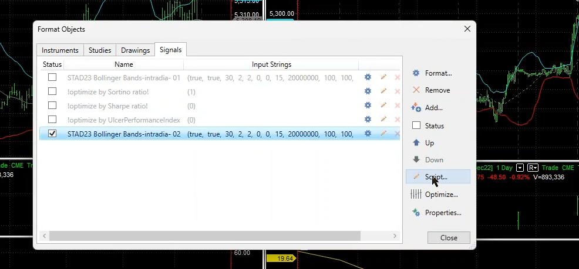
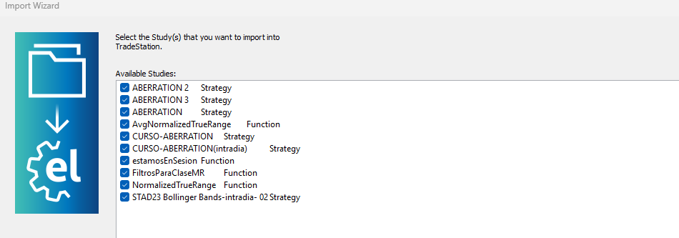
Código y Workspace: - Code: PRACTICA 11 - WorkSpace: 10-Curso-MeanReversion-intradia(es) - Strategy: STAD23 Bollinger Bands-intradia-02
Bueno, esta es la versión que ya vimos del Bollinger Bands. Por el código, acordaros: simplemente compramos en banda baja, vendemos en banda alta, y vimos distintas posibilidades de cara a la salida de TP’s, SL’s con ATR, sin ATR. Vimos distintas salidas, vimos algún filtro de ADX, de volatilidad, hablamos de otros filtros, desde donde haya habido alguna evolución.
Salida: implementamos también varias salidas, una de ellas en la banda contraria —que es quizá la más razonable— y también hablábamos de trabajar con filtros horarios aquí.
TradeStation
A ver si mientras carga lo monto aquí en TradeStation, al menos lo podemos ver mientras no carga:
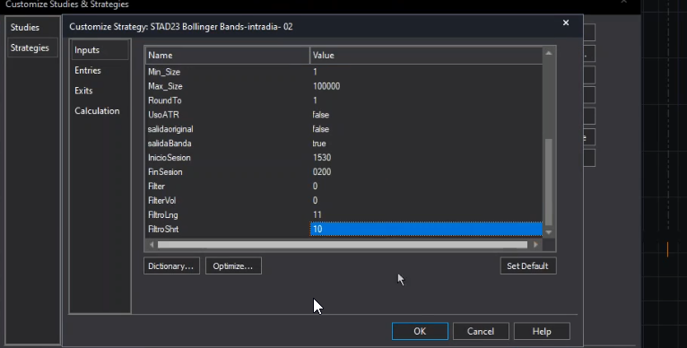
¿Sí, este en el 10 era donde mejoraba mucho, verdad?
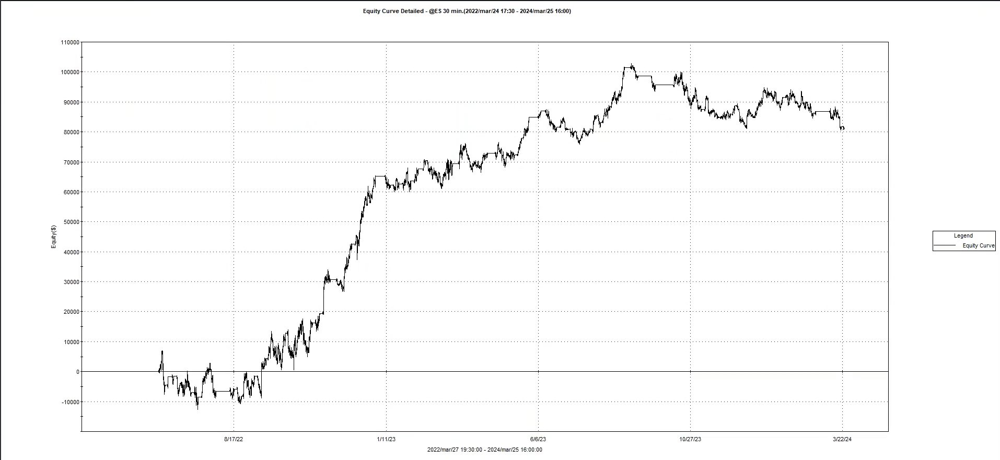
No, mucho tampoco de cortos:
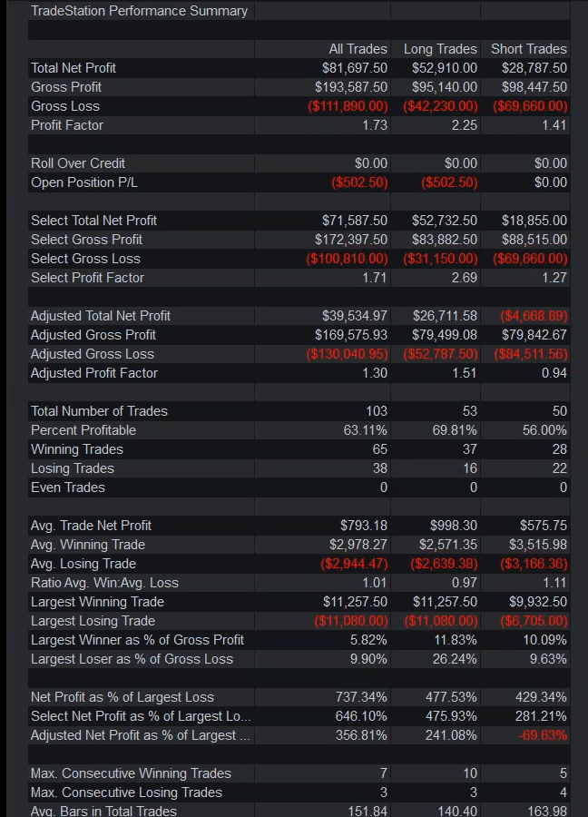
Mejora poquísimo el filtro de cortos de 11 a 10:
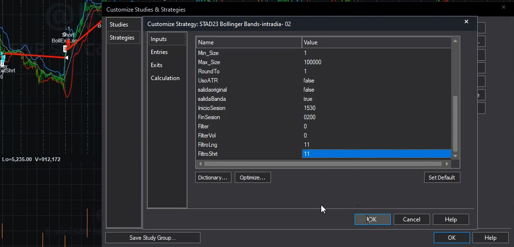
Referencia al PDF del test para revista
Y en por qué recapitular, recordaros que este es el sistema que ya os pasé. Este ya lo subimos, que era el test que hicimos para una revista, os lo recopilé así en un artículo nuestro. Esto lo habíamos hecho para, no me recuerdo qué revista, y aquí probamos distintas versiones y bueno, poquito, con había algunas métricas y demás, no, simplemente un test sencillo con distintas medias en las bandas en distintos futuros.
Y bueno, pues ahí podéis compararlo, jugar, y así tenéis una referencia de qué activos pues va un poco mejor este tipo de estrategia. Lógicamente en las materias primas va mal, suele ir mal, y donde suele ir un poco mejor puede ser en bolsa, puede ser en bonos. Es un poco el inicio, es un poco el sitio donde puede ser que vaya mejor. En la mayoría iba bastante flojo. Sobre todo eso está hecho en diario.
Aplicación de filtros en largos y cortos
Y la única diferencia, ya para acabar y pasarme al tendencial que habíamos probado, era la aplicación de algunos filtros en largo y en el corto, probamos ya de manera sencilla:
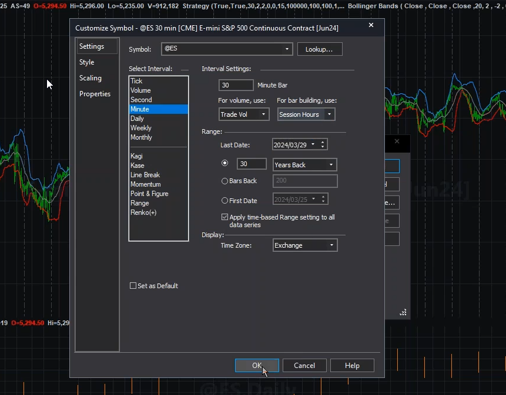
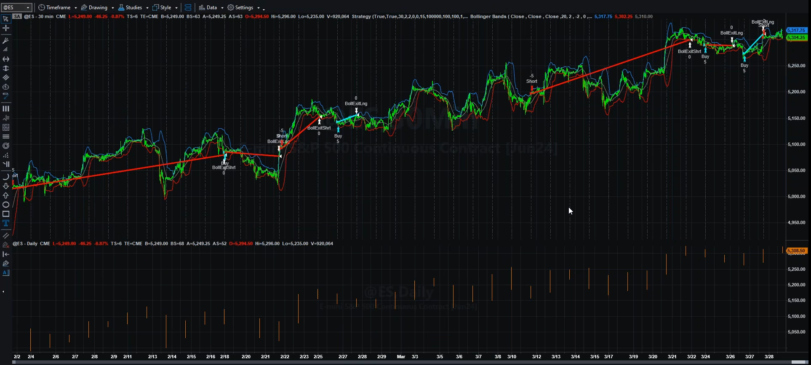
Bueno, aquí sencillamente teníamos la versión misma, así es como estaba, así creo que está sin filtros, sí, 11 está sin filtros:
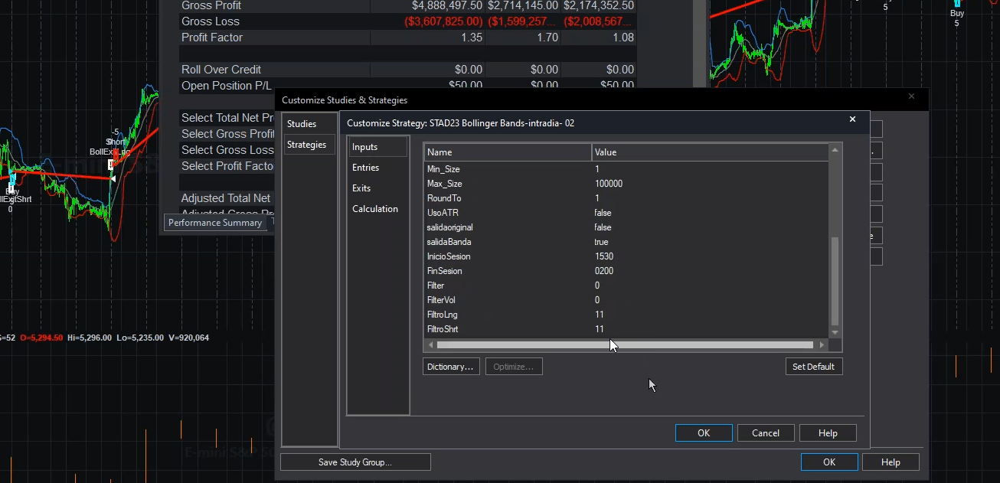
Simplemente está filtrada pues la entrada y la salida, y ahí está, que es algo, con gestión monetaria que trae. Lado largo muy decente, el lado corto muy cojo, corto está ahí con dificultad:
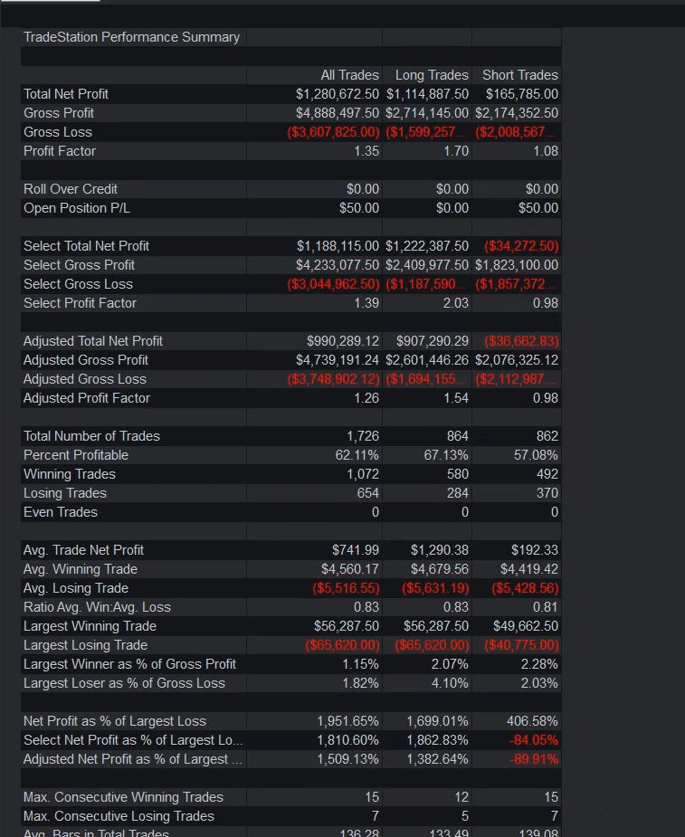
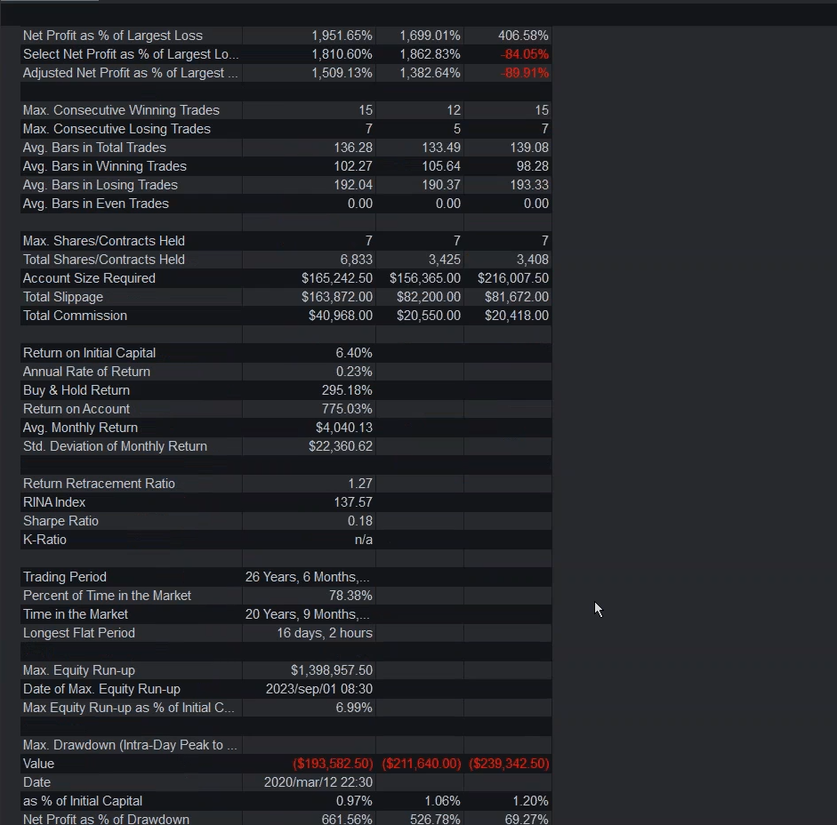
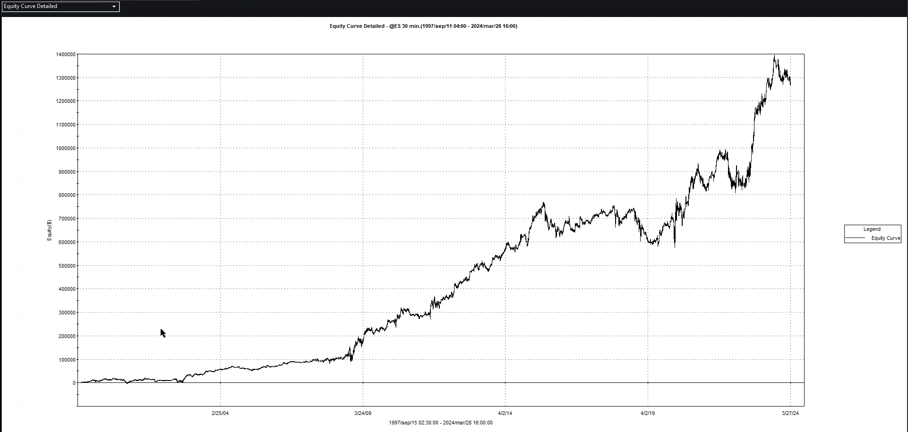
Análisis de curvas de largos y cortos con MultiCharts
Con filtros es lo que quería enseñaros porque MultiCharts permite enseñar la curva de los dos lados, por eso estoy insistiendo en él, no es que tenga un capricho. Es que al final TradeStation no puede enseñar la curva de largos y cortos y en MultiCharts sí, entonces pues esa era la gracia, pero de momento no va a poder ser.
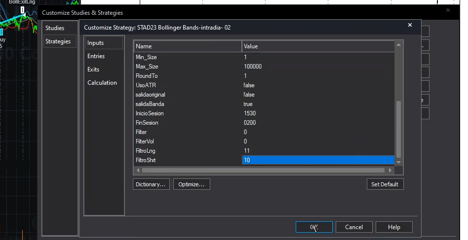
Y por otro lado es lo que os digo, aquí hay unos cuantos filtros que estuvo trabajando Alberto ayudándose un poquito de fuerza bruta, estuvo explorando un poquito algunos filtros. Esto es un poco lo que hablamos con quien me preguntó de Unger (Andrea Unger): son filtros de este tipo que puedes encontrar en muchas revistas, y que ahora os voy a enseñar algunos de ellos. Son filtros sencillos, en el fondo ya son todos, provienen de velas.
Cuando hablamos de los ORB vimos muchos conceptos sobre ellos: narrow range, inside bar, outside bar, cierre positivo, cierre negativo, cierre mayor que máximo, menor que… Filtros realmente sencillos.
Mejora de la pata corta con filtros
Ahora ya se había cargado bien:
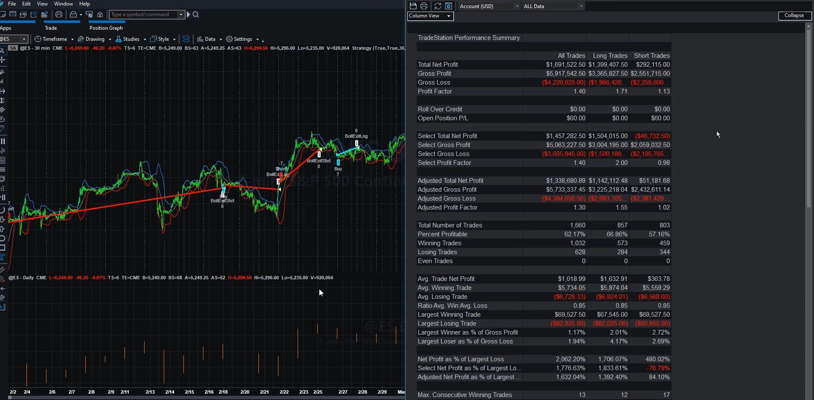
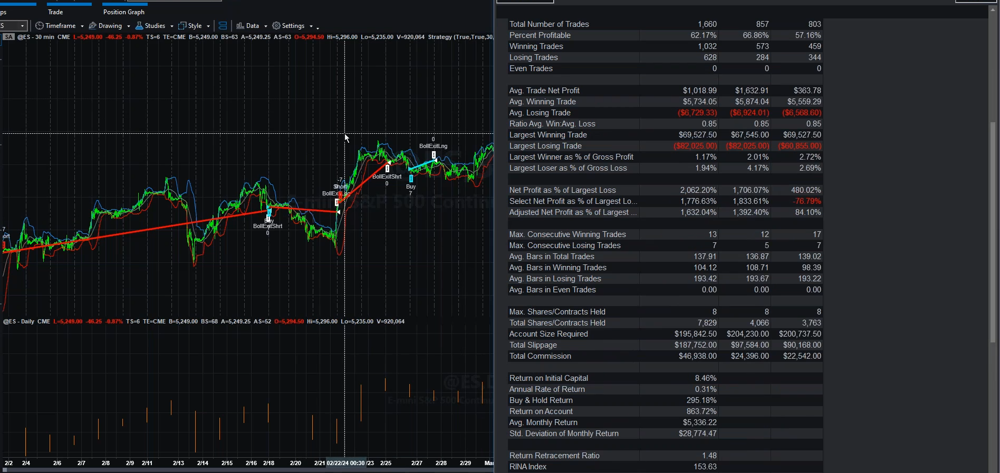
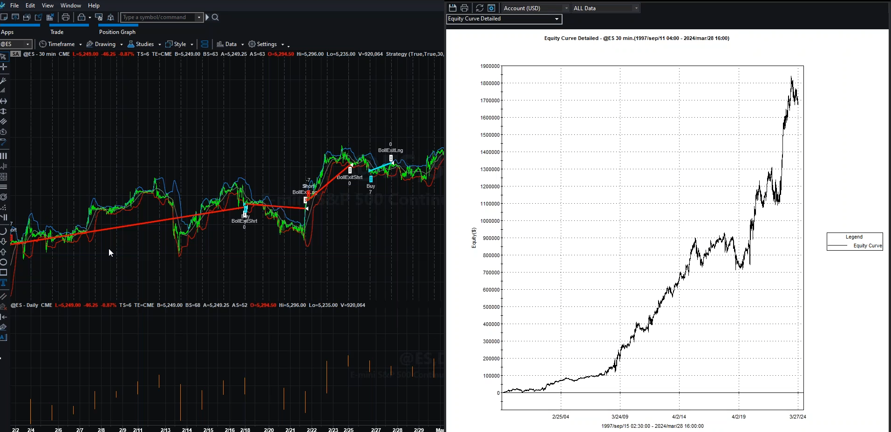
Ahora veis, hemos mejorado un poquito la pata corta, hemos mejorado un poquito la pata corta sin ser nada espectacular. Aquí seguimos teniendo, a la semana que viene lo trabajaremos, mi opinión: aquí hay camino de mejora vía salidas. Recuerdo el camino de mejora salidas porque en uno, y es verdad, estamos dejando correr bastante.
El problema de las operaciones enganchadas
El problema siempre son las perdedoras, en este caso especialmente, porque es verdad que acertamos pero vez tenemos enganchadas muy heavy, y ahí es donde realmente habría que salir.
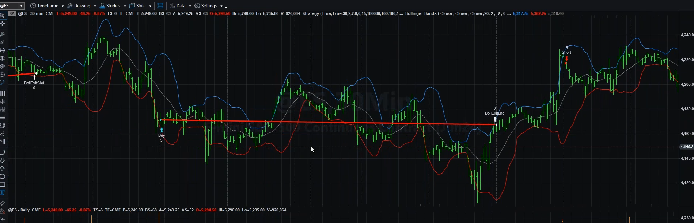
¿Qué camino hay? Bien, si vía pérdida no lo conseguimos —que es muy habitual, es muy habitual que la pérdida siempre empeore el sistema—…
Mira qué enganchada aquí:
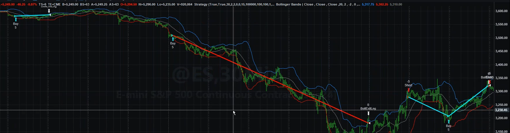
Esto no puede ser. Es evidente que esto tiene camino de mejora.
Una solución —ya la semana que viene lo probamos pero ya os adelanto alguna— una solución que viene bien cuando no encontramos solución vía pérdida, típico stop de pérdida, es salida temporal, salida temporal.
Porque al final, el tiempo, en la teoría lo vimos. Acordaos que os lo comenté: salida en N barras, o diferenciando, si se quiere, entre ganadoras y perdedoras.
Pero fijaros, acordaros que un sistema, porque un sistema antitendencial como este, acordaos que lo que tiene es un porcentaje de aciertos elevado. Tiene un porcentaje de aciertos que es 50%. Al final la salida, todo el sistema debe ser coherente, lógicamente. Pero para aplicar las salidas es muy importante el sentido común, y el sentido común al final se va educando un poco con la experiencia y la práctica.
Análisis del porcentaje de aciertos y ratio en sistemas antitendenciales
¿Qué quiere decir que yo tengo un porcentaje de aciertos elevado? En este caso es del 60%. Acordaros que ahí siempre se mueven uno en contra del otro: si yo acierto mucho quiere decir que tengo un ratio Avg Winner/Loss bajo, que en este caso incluso es inferior a 1. Y esto en la práctica, ¿qué quiere decir? Quiere decir que tengo perdedoras muy grandes en relación a las ganadoras, o sea que tengo mayores perdedoras que ganadoras. Y también que mi pérdida media es mayor que mi ganancia media, y que en cualquier caso mis pérdidas en valor monetario pues corren más, corren más que mis ganancias.
Tiempo medio de operaciones ganadoras vs perdedoras
Por lo tanto, si yo pongo una salida por tiempo… A ver, este dato lo tenemos aquí, fijaros un momentito que estoy buscando un dato en el Performance Report pero no lo encuentro, aquí, aquí, aquí, vale. Ahora cuando MultiCharts cargó, MultiCharts carga un seguido de estos y no lo cerraré porque parece que está un poco colgado.
Es el Performance Report de ese sistema:
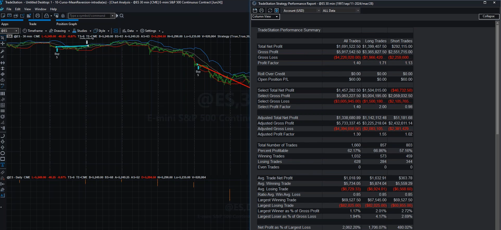
Es igual, más allá del resultado ahora mismo me da un poco igual, pero eso que os decía de aciertos:
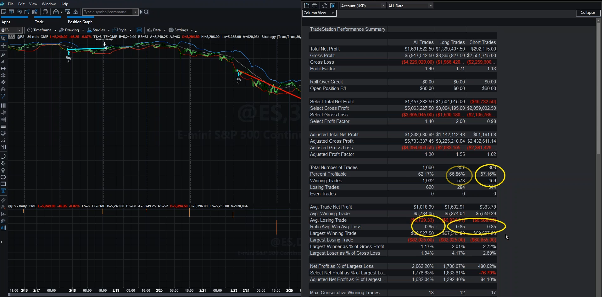
Lo que decía: porcentaje de aciertos 62%, lógicamente más en los largos que en los cortos, pero aun así los cortos también por encima de 50 como veis. Y eso implica un ratio de 0,85%, que además es igual en este caso, es igual en largos y cortos.
¿Y eso qué significa? Que la media de trade ganador ($5.734) es menor, ahora se verá, que la de perdedor en valor absoluto, lógicamente es mayor la pérdida:
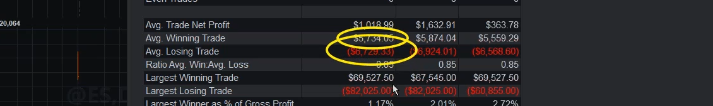
Y esto también se traduce en otra cosa frecuentemente. Yo aquí tengo los tiempos medios. Vemos el tiempo medio de generar una operación, pero fijaros que las ganadoras están mucho menos tiempo que las perdedoras:
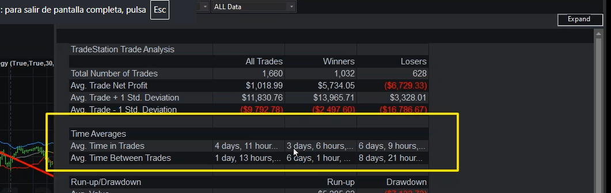
¿Qué quiere decir esto? Porque eso es lo que hay detrás: salir por tiempo suele rentar porque cuando yo me quedo mucho tiempo normalmente es para perder; cuando acierto suelo hacerlo rápido. Lógicamente hay excepciones, pero de media, cuando acierto hago las ganancias antes que las pérdidas en valor absoluto.
Por lo tanto, cuando yo no consigo mejorarlo vía salida —sea absoluta, sea porcentual, sea ATR, lo que sea— una de las maneras es salir por tiempo.
La semana que viene jugaremos con esto, pero es probable, lo veremos, que la salida por tiempo nos ayude a evitar esto. Es decir, yo pongo una salida que puedo diferenciar si estoy en ganancias o estoy en pérdida, y puedo diferenciarlo. Pero incluso sin diferenciarlo —por no sobreoptimizar— veréis que es probable que nos rente salir en N barras, porque se va a quedar enganchado al final, y si no cierra por su objetivo pues se sale, pasan las que sean barras y se sale, y vas a evitar quedarte mucho tiempo.
Análisis de Run-ups y Drawdowns en el Performance Report
Veréis que el run-up nos dice el mayor valor, nos lo dicen como valor medio de los run-ups y de los drawdowns, y demás:
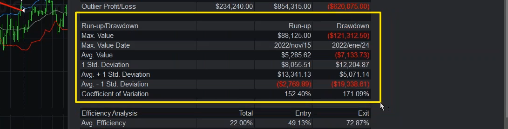
Esto es referido a los trades. Es decir, nos está diciendo que el trade que más valor acumulado ha tenido ha sido $88.000, pero fijaros que la pérdida que más ha acumulado ($121.312) es mayor. Nos da las fechas, que es normal que sean cercanas porque es por volatilidad, y también nos da el valor medio de los run-ups y de los drawdowns de los trades —repito, de los trades—. Siempre es mayor, como veis, la pérdida; también la primera desviación.
Entonces, al final, esto es lo que os digo: suele llevar a salidas temporales, que rentan bastante en este tipo de sistemas anti-tendenciales (Mean Reversion).
Comportamiento en sistemas tendenciales versus anti-tendenciales
En un tendencial es distinto, porque es justo lo contrario; entonces ahí a lo mejor no me renta tanto una salida por tiempo. En un tendencial no renta que quite colas, o sea, que este tipo de salidas suelen mejorar anti-tendenciales, Mean Reversion, sistemas intradiarios; incluso breakout puede mejorar. Pero un tendencial puro no es habitual que lo mejore.
Un tendencial puro hay pocas salidas que puedan ayudar a mejorar —esto que no sean casuales o fruto de la sobreoptimización— porque un tendencial necesita estos trades de muy largo recorrido para ser rentable, porque acierta muy poco.
Entonces pasa justo lo contrario: ahí veréis run-ups muy largos y pérdidas menores. Pero aquí estamos en la situación contraria; por lo tanto, cualquier trade o cualquier salida que a mí me saque del mercado simplemente por tiempo —sin tener en cuenta si va bien, si gano, si pierdo— normalmente me va a rentar, porque me va a quitar más pérdidas que ganadoras. ¿Se entiende?
Variante condicional de la salida por tiempo
Aun así, también se puede hacer la regla —repito, si hay suficientes
trades puedo hacerlo—: se puede hacer la regla de decir “si estoy en
pérdidas, salir en N barras; si no, seguir días”. Es decir, si
OpenPositionProfit es menor que cero, aplico la salida en N
barras; si no, no lo aplico, por ejemplo.
Pero fijaros que siempre los perdedores suelen… Veréis muy pocas flechas, alguna hay, pero ha estado en pérdidas. Trades ganadores que sean muy largos de tiempo, me refiero —mira, esas seguramente de las más largas— pero no es nada habitual:
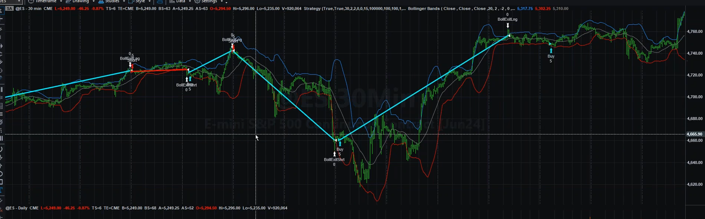
Code: FiltrosParaClase_MR.ELD
Estructura del selector con Switch
Lo que os decía, tenemos unos filtros para largos y unos filtros para cortos.
Está hecho con dos datos Data1 y Data2. Así puedes operar en intradía pero filtrar con condiciones diarias. Y como os conté, hay un switch de diversos, es porque así tú puedes llamar a cada una de ellas de manera muy sencilla:
# FILTROSPARACLASEMR.ELD
# Lo aplicamos en Data2 para los calculos de los filtros
[LegacyColorValue = true];
input: selector(numericsimple);
var: opend0(0),opend1(0),opend2(0),opend3(0),opend4(0), opend5(0);
var: highd0(0),highd1(0),highd2(0),highd3(0),highd4(0), highd5(0);
var: lowd0(0),lowd1(0),lowd2(0),lowd3(0),lowd4(0), lowd5(0);
var: closed0(0),closed1(0),closed2(0),closed3(0),closed4(0), closed5(0);
var: body1d(0),range1d(0),body5d(0),range5d(0);
# Así puedes operar en intradía pero filtrar con condiciones diarias.
# Data1 es el timeframe de operación (ej: 5 min)
# Data2 es un timeframe superior (ej: diario).
# Extracción de datos de Data2
opend0 = Open of data2; highd0 = High of data2; lowd0 = Low of data2; closed0 = Close of data2;
opend1 = Open[1] of data2; highd1 = High[1] of data2; lowd1 = Low[1] of data2; closed1 = Close[1] of data2;
opend2 = Open[2] of data2; highd2 = High[2] of data2; lowd2 = Low[2] of data2; closed2 = Close[2] of data2;
opend3 = Open[3] of data2; highd3 = High[3] of data2; lowd3 = Low[3] of data2; closed3 = Close[3] of data2;
opend4 = Open[4] of data2; highd4 = High[4] of data2; lowd4 = Low[4] of data2; closed4 = Close[4] of data2;
opend5 = Open[5] of data2; highd5 = High[5] of data2; lowd5 = Low[5] of data2; closed5 = Close[5] of data2;
# Cálculos auxiliares
body1d = absvalue(opend1-closed1); range1d = (highd1-lowd1);
body5d = absvalue(opend5-closed1); range5d = maxlist(highd1, highd2, highd3, highd4, highd5) - minlist(lowd1, lowd2, lowd3, lowd4, lowd5);
Switch(selector) Begin
# Consolidación: el cuerpo de 5 días es < 75% del rango → mercado lateral
case 1: FiltrosParaClaseMR= body5d < 0.75 * range5d;
# Tendencia fuerte: cuerpo > 90% del rango → movimiento direccional
case 2: FiltrosParaClaseMR= body5d > 0.9 * range5d;
# Rango mínimo hoy: al menos 0.5% entre high y low
case 3: FiltrosParaClaseMR= ((highd0>(lowd0+lowd0*0.5 *0.01)));
# Rango mínimo hoy: al menos 1.5%
case 4: FiltrosParaClaseMR= ((highd0>(lowd0+lowd0*1.5 *0.01)));
# Rango máximo hoy: menos de 2.5% → día tranquilo
case 5: FiltrosParaClaseMR= ((highd0<(lowd0+lowd0*2.5 *0.01)));
# Vela bajista ayer (cierre < apertura)
case 6: FiltrosParaClaseMR= (closed1<opend1);
# Gap alcista: ayer cerró > 1% por encima de anteayer
case 7: FiltrosParaClaseMR= ((closed1>(closed2+closed2*1 *0.01)));
# Mínimo de hoy superior al de ayer + 0.5%
case 8: FiltrosParaClaseMR= (lowd0>(lowd1+lowd1*0.5*0.01));
# Contracción de rango (volatilidad decreciente)
case 9: FiltrosParaClaseMR= (highd1-lowd1)<(highd2-lowd2);
# Precio actual por encima de la apertura del día
case 10: FiltrosParaClaseMR= (C>opend0);
# Sin filtro (siempre pasa)
case 11: FiltrosParaClaseMR= true;
# Bloquea todo
case >11: FiltrosParaClaseMR= false;
end;Patrón de selector true/false
Siempre se hace así:
# Sin filtro (siempre pasa)
case 11: FiltrosParaClaseMR= true;
# Bloquea todo
case >11: FiltrosParaClaseMR= false;Poniendo una de ellas que la deja en true y una de ellas que la deja en false, que normalmente es la última, porque así, en caso de que te equivoques, pues simplemente ves que no actúa. Si tú le pones 12, no hará ningún trade porque le dará valor false a la función y no operará. En cambio, el caso contrario: se pone 11, que siempre es true, es decir, que por lo tanto es no filtrar.
De esa manera tú puedes incorporar la función en cualquier parte; esto siempre es así. Lo que cambia es el contenido, no deja de ser una plantilla, un selector.
Esto se hace así para las salidas, así para todo. Es decir, es un
selector que se va configurando de sí o
no; de esa manera, tú, llamando ese selector en tu condición de
entrada, le dices qué debe hacer.
Strategy con selector integrado
Por otra parte tenemos la Strategy: STAD23 Bollinger Bands-intradia-02
Hay un input para largos y otro para cortos, porque así le puedes poner un valor distinto a cada uno:
if estamosEnSesion(InicioSesion, FinSesion) then
begin
{ Long entries and Exits }
If Allow_Long then begin
# Si cruza por encima de la banda inferior entra largo
If Close cross over LoBand and MarketPosition <> 1 and Trend and Vol and FiltrosParaClaseMR(FiltroLng) then
Buy Contratos shares next bar at Market;
# Take Profit en la banda de Bollinger contraria
if salidaBanda and marketposition <> -1 then
Sell ("BollExitLng") next bar at HiBand limit;
End;
{ Short entries and Exits }
If Allow_Short then begin
# Si cruza por debajo de la barra superior entra corto
If Close cross under HiBand and MarketPosition <> -1 and Trend and Vol and FiltrosParaClaseMR(FiltroShrt) then
SellShort Contratos shares next bar at Market;
# Take Profit en la banda de Bollinger contraria
if salidaBanda and marketposition <> 1 then
BuytoCover ("BollExitShrt") next bar at LoBand limit;
End;
end;Exploración de filtros con fuerza bruta
¿Y cuándo es cada una de ellas true? Bueno, hay que probar varias de distinto tipo, probar algunas; realmente hay montones de librerías por ahí, ya os pasaremos algunas. La semana que viene nos dedicaremos un poco solo a practicar con selectores, pensado más para la salida.
Pero como os digo, es una herramienta que se utiliza también para filtros y para todo, así que lo veremos un poco para todo, pero sobre todo, como digo, para las salidas.
Simplificación con variables de Data2
¿Qué implican? Bueno, por eso os digo: este simplemente valora que el cierre sea menor que la apertura diaria. Esto lo tienes definido aquí.
Es fácil hacerlo como lo ha hecho Alberto, porque si no, pues hay que hacerlo con arrays y demás, y es muy complicado. Pero así es bastante sencillo: simplemente guardas el valor de cada uno de los campos de la barra —open, high, low, close— y le asignas una variable, para no estar cada vez escribiendo todo eso:
# FiltrosParaClase_MR.ELD
opend0 = Open of data2;
highd0 = High of data2;
lowd0 = Low of data2;
closed0 = Close of data2;
opend1 = Open[1] of data2;
highd1 = High[1] of data2;
...
opend2 = ...
opend3 = ...
opend4 = ...
opend5 = ...Sobre todo porque en este caso está referido a un Data2, y
habría que escribir cada vez High of Data2,
Low of Data2… Entonces lo ha guardado ya todo aquí en una
variable: opend0 es Open of Data2,
highd0 es High of Data2. El Data2 en
este caso está en diario, por eso le llama d.
Pero realmente, en este caso, podría haberse hecho de otra forma,
porque en sh existe la palabra reservada CloseD, que es el
cierre diario. Es una función que devuelve el cierre diario; ya lo tiene
implementado TradeStation. Igual que HighD, que es el
máximo diario aunque estés en intradía. Pero lo hemos hecho así para
simplificar; así queda mucho más claro.
CloseD → Cierre diarioOpenD → Apertura
diariaHighD → Máximo diarioLowD
→ Mínimo diario[1], [2]…) y hace el código más
legible.
Filtros para largos: evaluación preliminar
Y hay distintos filtros; por no alargarnos tampoco ad eternum viéndolos uno a uno ahora, ya repito que esto os lo pasaré en ese sistema. En el caso largo, era algo probable —no es seguro, pero es probable— porque en el lado largo no hay mucho problema, en el sentido de que siempre vas a operar a favor de tendencia y por lo tanto es más sencillo, que no sea necesario filtrar entradas. Porque acordaos que estás en una estrategia antitendencial y que, por lo tanto, ya estás entrando en una cierta sobreventa para ir largo.
Es decir, ¿cuándo va a entrar largo?
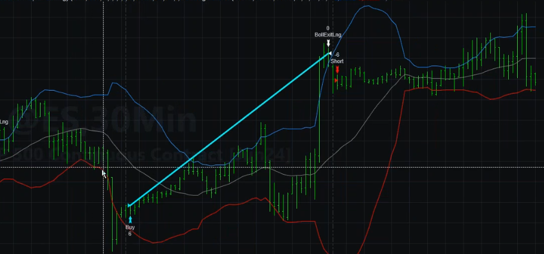
Cuando el precio ha caído un poco, porque para ir a la banda de abajo y cerrar por debajo tiene que haber caído. Entonces, en un activo que tiene una evidente tendencia alcista de largo plazo, comprar cuando cae pues normalmente es más probable que sea buena cosa que vender.
Entonces, normalmente puede ser que no haga falta filtrar. No quiere decir que sea imposible encontrar un filtro para mejorar largo, que quede claro, pero a priori es algo que puede ser fácil.
Filtros para cortos: donde está el trabajo
Donde está el trabajo, lógicamente, es para mejorar los cortos. Y de hecho hemos encontrado que los mejora un poco, pero solo un poco; realmente tiene bastante campo de mejora.
Porque donde ha habido quizá más mejoras es en la ventana horaria: en trabajar unas ventanas horarias que intentan aprovechar —no se centra solo en ella, pero sí indirectamente— una pauta que seguro habéis oído nombrar: la pauta del overnight.
Que, por cierto, lleva tiempo funcionando mal. Pero hay mucha gente que opera sistemas de overnight porque, durante muchos años, tanto la subida del S&P como del Nasdaq ha estado —más de dos tercios de ella— centrada en el overnight. Es decir, venía el mercado con gap y, una vez abría el mercado regular, de media, la subida era inferior a la que había habido durante el overnight: es decir, desde que cierra Wall Street a las 22:15 hasta la apertura del día siguiente a las tres y media.
Entonces, aquí por ejemplo, el filtro que nos ha venido saliendo era justamente ese: abrir justo cuando el mercado está cerrando. A partir de las cinco y media —que es cuando cierran, tres y media en horario regular— pues a partir de ahí empezar a buscar entradas, porque hay un sesgo ahí. Pues tengo que poder ir largo, poder ir corto, y seguramente otra posible mejora —cuidado con la sobreoptimización— es trabajar las ventanas temporales de forma distinta.
Riesgo de sobreoptimización con ventanas temporales
¿Es recomendable hacerlo? Bueno, tiene riesgo de sobreoptimización, lógicamente. Es decir, hay que vigilar, hay que tener una muestra muy significativa, muchos años; hay que vigilar. Pero en intradía pensad que siempre hay más margen. Es lo que en la teoría insistíamos mucho: no es lo mismo trabajar un sistema que va en diario, que un intradía de 240, o un intradía —ya no te digo de 30 sino de 15 minutos, imagínate.
A veces puedes hacer eso, decir: “bueno, pues ¿sabes qué voy a hacer? Voy a bajar timeframe, mantengo histórico porque quiero representatividad, pero si voy a buscar operar más, claro, eso no me sirve”. Luego bajar a 15 minutos y hacer 500 operaciones, por decir algo. Si voy a conseguir a lo mejor 5.000 operaciones, ¿entiendes?, siempre es mejor, siempre es mejor. Voy a ganar ahí mucha significación y puedo aumentar mi margen; puedo decir: “bueno, pues voy a probar en este caso a separar el tiempo, a ver qué veo”.
Si mi análisis da que no me da una gran diferencia, pues no lo cambio, ¿entiendes? Es decir, si en una me sale que entro a las 15:30 y en la otra me sale a las 16:00, no lo cambio. Es decir, solo lo cambiaría con el mismo criterio que decía antes hablando con Rubén en el Discord: que sea significativa la mejora. Es lo mismo si yo voy a separar largos y cortos: tengo que hacerlo teniendo una muestra muy importante de trades, teniendo una representatividad de mercados muy elevada.
Es una práctica de riesgo y hay mucha gente a la que no le gusta. A mí personalmente me gusta mucho, pero es verdad que hay que tener claro que aumenta el riesgo de sobreoptimizar; es decir, es así, y por eso hay gente que no es partidaria. Es verdad que yo he operado casi toda mi vida muchos sistemas que operaban el mercado de acciones, entonces claro, eres un poco fruto de tu experiencia, pero vengo de ahí y ahí es donde más falta hace eso.
Diferencias entre mercados: acciones vs commodities
Si tú ya vas a mercados más simétricos, no hace tanta falta, y entonces es peor práctica. Pero en acciones es muy buena práctica. Pero cuidado con sobreajustarse. A lo mejor también podemos encontrar ventanas horarias distintas; hay que vigilar con esto que os digo, seguro, casi seguro.
Apuntadlo para probarlo, Alberto: probar la versión 3, que hay ventana distinta para largo que para corto. Ventana distinta. En vez de hacer 2 y 2, lo que haría es: una hora de entrada de corto, una hora de entrada de largo, y un número de barras para los dos. Un número de barras para los dos, sí, para quitar una variable, para quitar un input. Así tendrías 3 en vez de 4. Sí, porque no va a ser más crítico la hora que si le das 3, 4, 5, 6 barras, ¿me explico?
Es decir, no iba a variar mucho, porque si te fijas, esta búsqueda de horas te ha dado claramente la ventana nocturna. Y la ventana nocturna es alcista, ¿entiendes? Entonces la corta nunca te va a dar eso; yo creo que la corta te va a dar todo lo contrario, te va a dar probablemente cerca de las ocho, las nueve, exactamente. Probablemente te va a buscar cortos entre las ocho y las nueve, me sospecho.
Ventanas horarias diferentes para largos y cortos
Esto es lo que os digo de la experiencia, de la sensibilidad del mercado, pero hay que verlo. Entonces probablemente te va a dar eso, te va a buscar ventanas distintas. Y esto, de verdad, no es mala práctica; esto es… ya en intradía no solo no es mala, sino que es buena práctica. Las ventanas horarias entre ellas son claves, ya os lo comenté, y no tienen por qué coincidir, sobre todo en acciones.
Si esto lo estuviéramos haciendo en otro activo, es otra cosa. Me refiero a oro, me refiero a petróleo, me refiero a cacao, zumo de naranja, soja, lo que sea. En acciones, largos y cortos no tienen nada que ver; no tienen nada que ver casi en nada: ni en horas, ni en dinámica, ni en duración de trades, ni en volatilidad. Es como otra cosa, es como otro activo.
¿Hay que hacerlo junto? No sé por qué hay que hacerlo junto. Es decir, puedes buscar un equilibrio, sí. Bueno, esto es como si tú tienes un coche y tienes que ir a correr en un circuito, y tienes que ir a correr por la montaña. Puedes montar un coche equilibrado entre las dos cosas, seguramente sí puedes, pero no irá bien ni en uno ni en otro, estamos de acuerdo. Porque en la montaña necesitarás amortiguadores altos, altura del suelo muy elevada, unas ruedas muy altas; y en el circuito necesitas suelo bajo, rueda muy ancha, perfil bajo porque no puedes pinchar. Es distinto.
Habrá momentos en que a lo mejor no puedo permitirme tener dos setups distintos, pues busco un intermedio. Bueno, en el caso del coche puede ser por pasta, puede ser por lo que sea, porque me lo obliga el reglamento. Pero aquí, si no puedo por falta de significación, pues perfecto; pero si yo me voy a la entrada y sí puedo, pues sí, intentémoslo. Si vemos que es parecido, no lo hago; si vemos que no lo veo robusto, pues no lo hago. Hay que, lógicamente, tener mayor precaución, pero sí que lo haría.
Sistemas antitendenciales: búsqueda de entradas y salidas rápidas
Y en un antitendencial, donde ya digo que busco ventanas, donde busco entrar y salir y quedarme pues dos días, tres días —no busco swing, un largo recorrido, busco estar en el mercado relativamente poco tiempo—, es bastante importante en qué horas entro. Y aquí digo que hay versiones. Este, yo creo que la semana que viene tenemos una versión un poquito más rápida que esta, creo. Haciendo esto, creo que conseguiremos una versión un poquito más rápida, es decir, que esté menos tiempo en el mercado que la que tenemos ahora.
Pensando en esto de las salidas que os digo, trabajando ventanas horarias, salidas por separado, incluyendo casi con total seguridad la salida temporal, como os decía, porque nos va a cubrir muy bien las malas operaciones.
Comenta Mario si el tema de los switches son solo para hacer el testeo. Bueno, también puede ser por cuestiones de configuración del sistema. O sea, es bueno dejar los códigos sencillos, un case es sencillo, no tiene nada. Al final tú lo tienes en un bloque begin-end y tal. Pero bueno, si tú luego cuando quieres dejar el sistema ya limpio lo dejas el filtro implementado y el resto fuera, puedes hacerlo.
Pero piensa que esto es la función, o sea, esto no es el código. El código al final llama a la función, o sea es una línea. Es decir, la función lo que sí que es buena y buena práctica: trabajar con funciones para no tenerlo todo puesto en el código, de manera más sencilla es más limpio. Pero tú al final la línea que usa esto en el sistema es una palabra, la función que lleva su trabajo y sus historias.
Filtros case: expansión, contracción y figuras de velas
Bueno, no las hemos mirado, pero ya os digo: todas tienen que ver normalmente con figuras —como se decía— de velas, o el tamaño de la vela, expansiones de volatilidad. ¿Cómo se mira una expansión de volatilidad?
Aquí por ejemplo hay alguna de ellas:
case 3: FiltrosParaClaseMR = ((highd0 > (lowd0 + lowd0 * 0.5 * 0.01)));Es verdad que la primera vez que la ves es como no intuitiva, pero
esto al final, esto que veis aquí, es una expansión de volatilidad. Te
está diciendo que el máximo —recordar que highd0 está aquí
definido, es el Data 2—:
opend0 = Open of data2;
highd0 = High of data2;
lowd0 = Low of data2;
closed0 = Close of data2;Por tanto es diario. Es decir, yo estoy en el intradía pero estoy usando una vela diaria para referirme, para mirar si ha habido expansión.
Es decir, por lo tanto, en el fondo estoy mirando el del día anterior. No sé si esto se entiende. Voy a explicarlo un poco más en el gráfico. Esto es porque esto es verdad que no lo he explicado, y para usuarios no muy familiarizados con esta herramienta puede, me acabo de dar cuenta que puede ser dar por sentada una cosa que no hay que dar. La rectifico.
Explicación del Multi-Data: Data 1 (30 min) y Data 2 (Diario)
Vuelvo al gráfico. Data 1 arriba, 30 minutos. Data 2 abajo, diario.
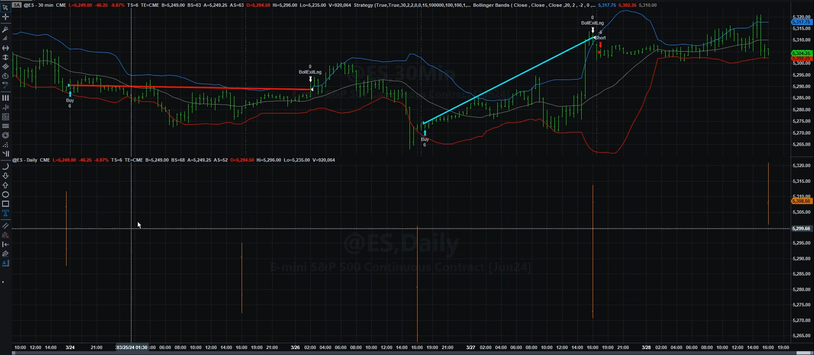
Es el mismo activo en este caso, podría ser otro, en este caso lo es.
Lo que se decía: arriba tenemos un 30 minutos cargado con todo el horario disponible del S&P 500 —que son pues casi 23 horas— y abajo tenemos un diario. Donde se alinean los datos, lógicamente se alinean a una hora que es al cierre:
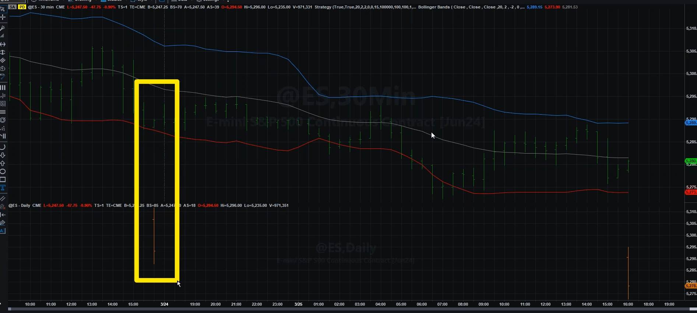
Esta es la práctica común, excepto MetaTrader por ejemplo que es otra cosa, pero da igual, no importa ahora, no nos perdamos.
En la barra de cierre se alinean. Quiere decir que hasta durante hoy, mira, lo vais a ver súper fácil, cargando tiempo real:
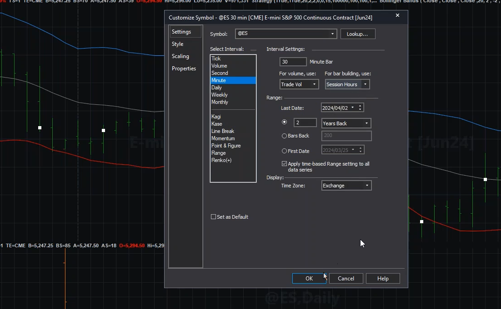
Lo vais a ver súper fácil cargando tiempo real. Cargó tiempo real, y si no se rompe nada a mí me está así, que me está dibujando la diaria, podemos decir a futuro, pero como veis no me deja consultarla.
Es decir, yo ahora no tengo acceso al cierre diario. Esto es obvio, ¿no? Es obvio. Por lo tanto, si yo ahora consulto el cierre diario, el cierre que estoy consultando es este:
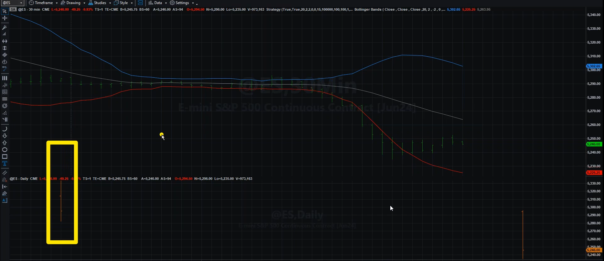
¿Se entiende? Durante el día de hoy, el cierre último diario es este. Es decir, si yo cuando abre el mercado —que es aquí, recordar que esto es el cierre de, recordar que aquí— para que lo voy a poner en el mismo TradeStation, porque aquí no se ve, aquí esta es la vela de cierre, esta de ahí, y abajo pues la misma, la misma. Esa es la vela de cierre intradía, y abajo tengo la vela de cierre diaria en esa, va en esa barra:
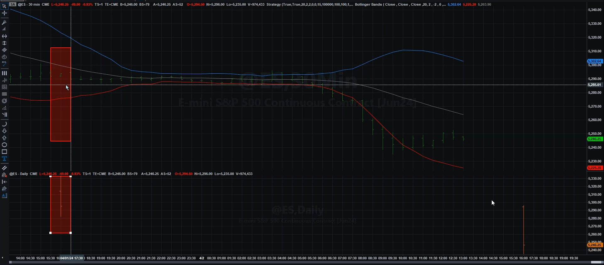
Si yo ejecuto el código ahí, que arriba se ejecuta en todas las velas al cierre de cada vela, en esa vela yo consulto cualquier dato y están alineadas y sí que coinciden en el tiempo. Pero a partir de la siguiente, a partir de la siguiente vela, cada vela de 30 minutos que cierra, cualquiera de ellas —voy a apuntar la hora en círculo para que sea otra, imaginaros esta—:
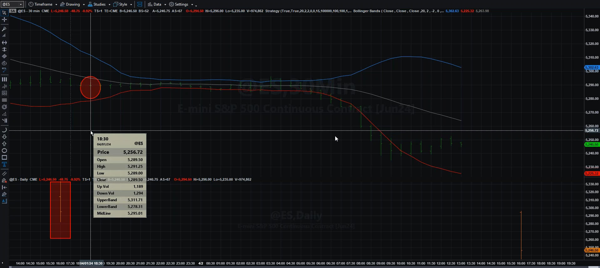
El código del sh se procesa y lógicamente le evaluará dónde está el precio, si cierra por debajo de la banda, si se va por encima, por lo que sea, las reglas del código. Al evaluar esta vela, pero si yo le consulto algún dato de la diaria, es obvio —verdad que es obvio— aquí ahora lo veis. Pero hay que entenderlo a nivel de evaluación: es obvio que no puede consultar esta:
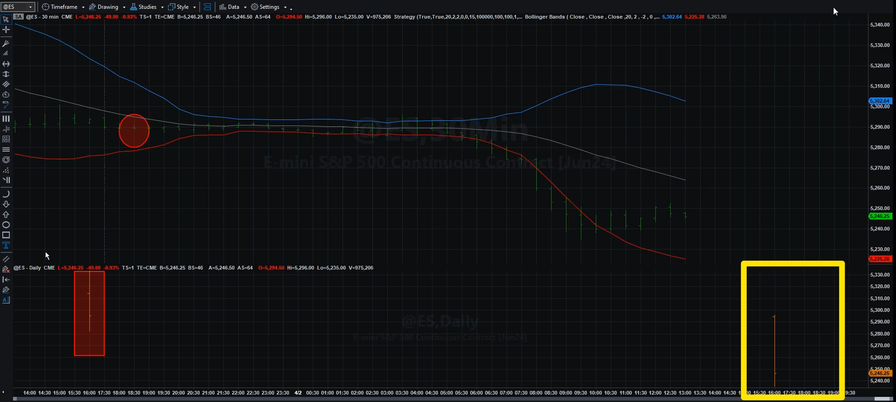
La que está consultando es esta:
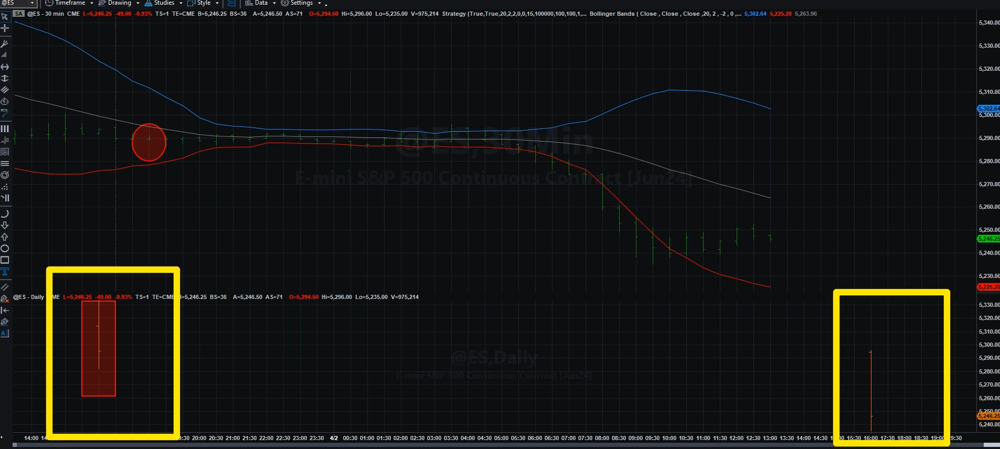
Por lo tanto, cuando yo estoy usando un filtro diario, lo que estoy valorando, puedo valorar datos de esta, pero los compararía con el cierre de ayer, ¿se entiende? Si me refiero a la diaria me referiría a los datos de la vela de ayer o de anteriores si quisiera. En cambio, a las velas de intradía me puedo referir a la actual, la anterior, la anterior a esa, a las que quiera.
Filtros de velas diarias desde el intradía
Bien, volvemos un poco al sh. Entonces, cuando yo estoy consultando —lo voy a dejar aquí en el lateral para que lo veáis— cuando yo estoy consultando un filtro, y aquí veis todos estos datos que ha calculado Alberto, se refieren al Data 2:
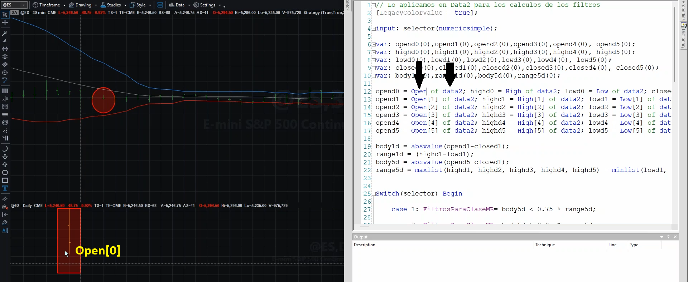
Y el open, cuando no pone nada, es 0. Es decir, el open 0 es esa que veis roja, ese es el open 0. Esta es el open 0, esta de aquí la primera. El open 1 es la del día anterior, y la anterior. Y lo mismo para el close, para el high, para el low. Esto estoy seguro que mucha gente está diciendo “esto es obvio”. Estoy seguro que hay otros que no. Entonces es importante entenderlo.
Porque cuando yo estoy aquí buscando filtros que están basados en la vela diaria, o que comparan a lo mejor datos de la intradía con la diaria, hay que entender esto. Porque aquí lo veis muy claro, pero es que esto en la penúltima del día también pasa. En la penúltima vela del día sigo consultando la diaria. Hasta que no estén alineadas —es decir, hasta la vela de cierre intradía del día— no estaré consultando… No será la open 0, será la del día, la de hoy al cierre será la de hoy.
Bien, entiendo que todo el mundo esto lo ve claro. Si alguien no lo ve claro o lo comenta, por favor ahí en el chat.
Filtros case: Close vs Open
Entonces, volviendo un poco a los filtros, alguno de ellos… A ver alguno muy obvio. Aquí veis, dice close de 1, open de 1:
case 6: FiltrosParaClaseMR = (closed1 < opend1);Está de hecho aquí. Alberto, podíamos haber usado también el 0, podrías haber usado close de 0. No lo hemos hecho pues por lo que sea, porque hemos probado algunos entre muchos. Como ya os digo, no deja de ser un ejercicio para el día siguiente, ya trataremos de afinarlo sobre todo, insisto, con las salidas.
Aquí sé que está el cierre:
case 10: FiltrosParaClaseMR = (Close > opend0);Fijaros que este Close es la diferencia, que es muy
importante. ¿Se lee bien en la pantalla, Alberto, el código? Se viene,
vale. Aquí fijaros, esto recordar que es lo mismo que close, lo escribo
para que así lo veáis más claro. Fijaros que aquí Close no
pone la variable que ha guardado, porque se está refiriendo al Data
1.
Es decir, esto ¿qué está haciendo para que lo entendáis bien? Todo esto está comparando el cierre de cualquiera de estas velas intradía, de cualquiera de estas:
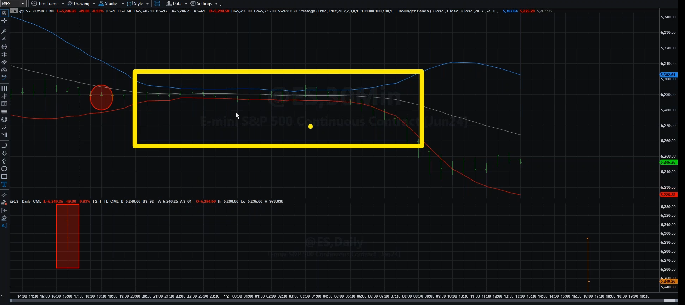
Bueno, en la que analice en cuestión, en cada momento, con el
opend0, con el open del día anterior:
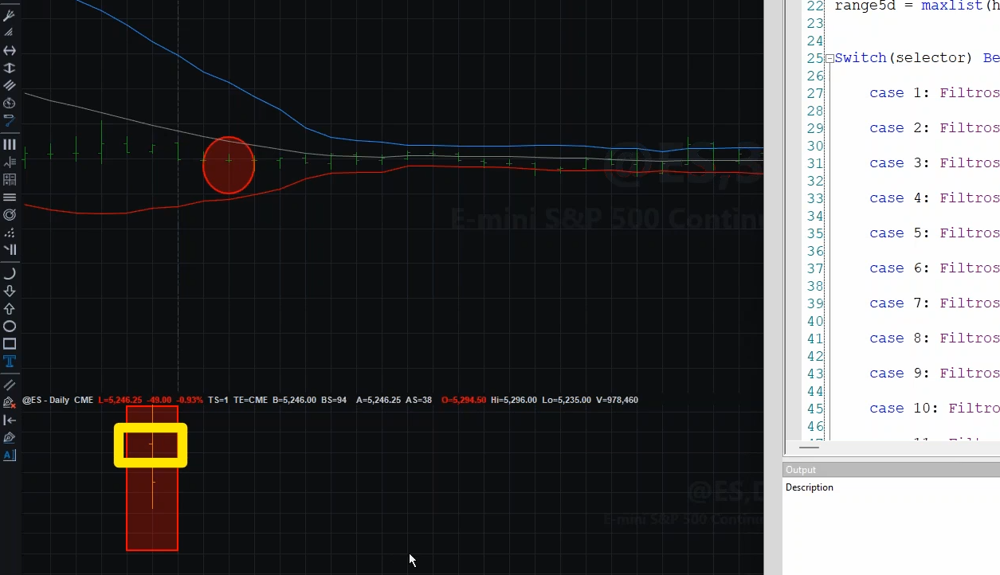
Este compara el close de la vela que estemos en cuestión —pues lo que sea, por ejemplo esta, hablando de esta regla para que entendáis la diferencia entre Data 1— el close de esta con el open de cero, que es la anterior diaria disponible, esta:
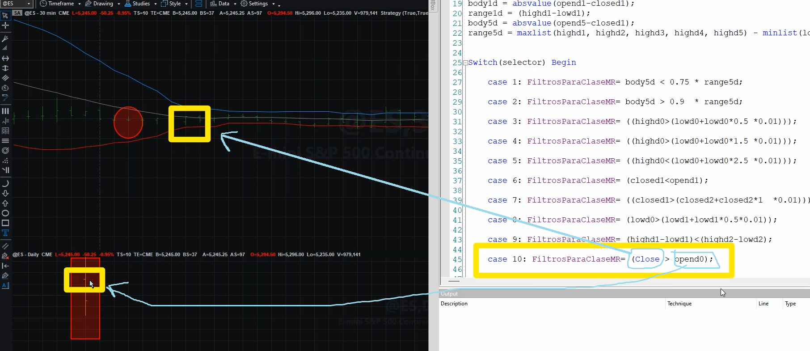
Podría haber sido también con el close, podría haber sido. A mí me parece que es más lógico, pero estos son filtros que están probados, así que Alberto ha elegido algunos. Pues ahora mismo no sé bajo qué criterio, el que sea, no importa. No importa porque lo importante de las clases es que entendáis las cosas.
A medida que vamos avanzando pues también iremos sacando cosas más acabadas, podemos decir. Pero sobre todo lo importante es sacar las ideas y los conceptos. Eso lo he insistido hasta la saciedad en todo el curso, y hasta con alguien que ha hablado antes del curso recuerdo que siempre me lo preguntaba: “oye, pero ¿salen muchos sistemas del curso?” Del curso salen algunos sistemas, pero no es el objetivo. No es el objetivo. O sea, no estáis comprando sistemas de esfuerzo. Para comprar sistemas se compran los temas y punto, es otra cosa. Estamos comprando un curso y en un curso hay que aprender a hacer las cosas y entenderlas sobre todo.
Filtros case: expansión y contracción de volatilidad
Entonces, al final, entender tipos de filtros de este tipo, donde digo puede haber… Que hay aquí, aquí que compara por ejemplo close de 1, bueno esta sí. Bueno, esta por ejemplo está comparando el máximo de esta vela, de la vela que tenemos encuadrada abajo, para que entendáis. Mira, vamos a marcar una. Estos que son más complicados, que tienen más largos:
case 3: FiltrosParaClaseMR = ((highd0 > (lowd0 + lowd0 * 0.5 * 0.01)));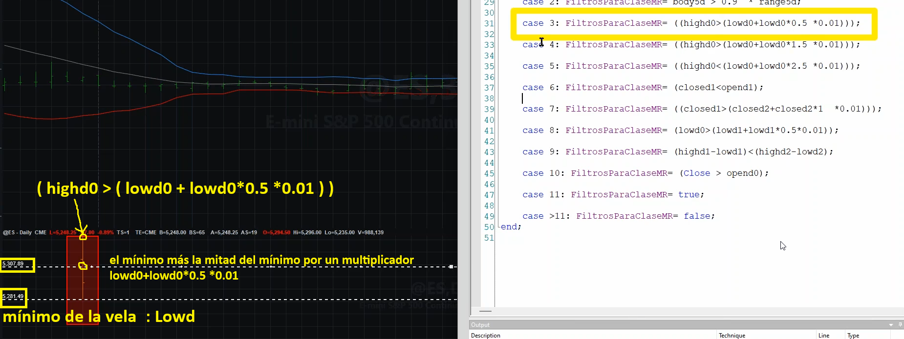
El highd de esta vela que está marcada que sea mayor que el mínimo. Esto es muy habitual porque es una manera de añadirle algo. Es decir, al final fijaros que estoy añadiendo un precio, un trozo de precio. Estoy pidiéndole en este caso que el máximo sea mayor que el mínimo más la mitad del mínimo por un multiplicador, por un multiplicador que es un porcentaje. 0,01 es esa manera de hacerlo porcentaje.
Entonces simplemente le estoy sumando la mitad, estoy multiplicando por 0,5, es decir, la mitad. ¿Entendéis? Estoy sumando la mitad de la vela, y lo multiplico por 0,01.
Y eso ¿qué me da? Pues me da concretamente 5307, me da otro precio, porque pues me da este precio que es la mitad, bueno es un poco más de la mitad. Entonces lo que estoy pidiendo es que el máximo sea mayor que eso.
La misma regla —por eso la ha puesto Alberto, para que yo os lo explicara— se puede hacer con 1,5, con 2,5. Desde lo que estoy pidiendo es una mayor expansión del precio, estoy pidiendo una mayor expansión. Y puede ser mayor o puede ser menor, puede pedir la expansión o contracción:
case 3: FiltrosParaClaseMR = ((highd0 > (lowd0 + lowd0 * 0.5 * 0.01)));
case 4: FiltrosParaClaseMR = ((highd0 > (lowd0 + lowd0 * 1.5 * 0.01)));
case 5: FiltrosParaClaseMR = ((highd0 < (lowd0 + lowd0 * 2.5 * 0.01)));Pero es que la 5 pide que sea menor, y la 3 y la 4 piden que sea mayor. Es decir, una es una regla de expansión y otra es una regla de contracción. Al final compara rangos de precios para rangos de precios.
¿Eso cuándo va a ser true? En este caso, en esta vela por ejemplo, es true porque es una vela de expansión, de gran expansión. El máximo es mayor que eso. Pero si fuera una vela chiquitita donde el máximo no se ha alejado mucho del mínimo —¿tenéis la idea?— el máximo no se ha alejado mucho del mínimo, eso sería false, porque ese valor, el 5307, sería por debajo del máximo. ¿Se entiende la idea?
Si esto lo miras en una vela que tiene menor rango, sería false. Y a medida que le voy aumentando el número, pues le pido más expansión. Si lo miro con 1,5 pues a lo mejor ya no da. Si yo este mismo cálculo, 5281 que hemos hecho antes porque el máximo —para que veáis cuál es el máximo más o menos, da igual si es exacto, lo que importa es la idea—…
Entonces, lo que tiene que ser veis: 5307 es menor que 5200, o dicho de otra manera, 5331 el máximo es mayor que 5200. Que quiere decir que el filtro 3 es true. Si yo le estuviera pidiendo eso para comprar, pues me daría que sí. Y eso me está mediando una expansión.
high > (low +
low × multiplicador × 0.01)high >
umbral → Filtro de EXPANSIÓN (momentum/breakout)high < umbral → Filtro de CONTRACCIÓN
(consolidación/reversión)Filtros de expansión vs contracción
Entonces hay algunas que hay filtros que son de expansión y de contracción que son de este tipo, normalmente sumándoles algo al mínimo comparándolo con un multiplicador, porque eso es una manera de ver que el rango es mayor. Puede hacerse también como vimos comparando la volatilidad directamente. También hay de comparación de apertura y cierre.
Inside Bar y Narrow Range
Y también como este tipo de aquí:
case 8: FiltrosParaClaseMR = (lowd0 > (lowd1 + lowd1 * 0.5 * 0.01));
case 9: FiltrosParaClaseMR = (highd1 - lowd1) < (highd2 - lowd2);Que es highd1 menos lowd1. ¿Qué es highd1 - lowd1? Es
range, es el rango de la vela, sea menor que el rango de la
anterior. ¿Eso qué es? Eso es una inside bar. Esto es una
inside bar. Es una manera de llamar una inside bar, ¿se entiende? Decir
que highd1-lowd1 del anterior sea menor que el highd2-lowd2 del anterior
más pequeño, es decir, un rango menor, ¿se entiende no?
Es eso: si lo pintáramos, el de la derecha sea menor que el valor de la izquierda de máximo a mínimo. ¿Eso qué es? Es una inside bar, ¿entendéis?
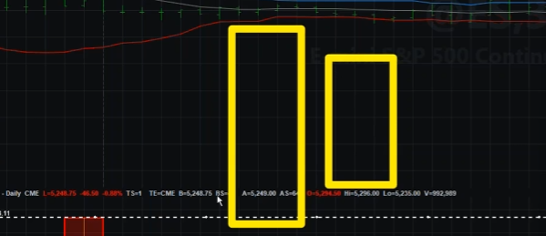
Hay muchas veces que las figuras de velas es como se dice, pues todas con campo de precio, todo es sumando, restando: high, low, open, close. Todo es lo mismo. ¿Cómo se mide el cuerpo de una vela? El cuerpo de una vela es esto:
¿Qué es el cuerpo? Open menos close o close menos open. Y el range es high menos low, es range o cuerpo. Y con esas dos, con esos cuatro campos, podemos relacionar distintas figuras, prácticamente todas.
Narrow Range: definición y aplicación
Y lo mismo de volatilidad, porque muchas de expansión, de contracción, acordaros que vimos brevemente, acordaros del narrow range. Esto es un narrow range, se va haciendo pequeño:
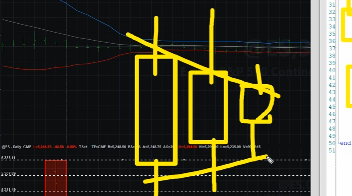
Narrow range de 3, de 4, ¿acordáis que lo vimos? Pero no necesariamente alineado, cuidado:
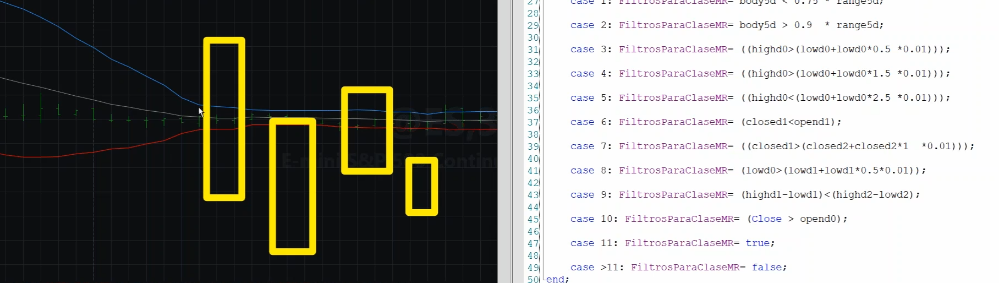
Esto es un narrow range de 4, porque el rango cada vez es más narrow, más pequeño. Esta tiene mayor, esta menor, esta menor, y esa menor. Es un narrow range de 4.
Bueno, todo esto al final es comparar el rango, se compara simplemente high menos low, ¿entendéis? Cómo se relaciona, cómo se analizan los filtros. Todo esto es así. O sea, de esto puedes hacer infinitos —bueno, infinitos no— pero puedes hacer muchos: algunos con sentido, otros absurdos, otros que son pasarse de frenada. Hay distintos tipos.
Comentario sobre filtros de días anteriores
Pero este que os digo, pues aquí hay alguno, por ejemplo a mí este es un poco raro, Alberto, porque es el cierre… O sea, no es… Esta es la anterior ya del, de uno pen uno. No sé si es que a lo mejor nos hemos equivocado, Alberto, pero el de uno, no se sabe la anterior durante la intradía. Habría que ver cómo va, de cero menos de menos open de cero.
Al final aquí casi todas, para mí las que tiene más sentido, es usar cero más que 1 o 2, o cero con unos. Pero esto de 1 contra 2, para mí rebuscado. 1 contra 1 también. La de 5 días aún, porque esas muchas, que es como los narrow de 3, de 2, hay mucha gente que lo usa porque es una semana. Con 5 días no es que sea nada, es que son 5 días, es una semana, es una unidad. Es la semana, es una unidad en el mercado. Las pautas estacionales tienen sentido.
Y entonces es por eso que al final la unidad de 5 días es una unidad de mercado, es una semana de mercado. Entonces por eso tiene sentido. Siempre hay que buscar el sentido de esas cosas.
Pero todas las que son cero comparando con 1, con 2, o con 3, sí. Pero comparando de 1 con de 1 o de 1 con de 2, para mí están un tantito rebuscadas. Esta por ejemplo, 10, está muy bien porque simplemente que el cierre sea mayor que el open del día anterior. Pero también se podría haber mirado el cierre mayor que el cierre anterior. Puedes buscar esta, o close mayor, es lo mismo, pero close mayor que close de 0, que es lo que hemos guardado arriba, porque esta es esta vela. Eso es esta vela, son distintas, ¿se entiende?
Consulta de Aureli sobre la función “De”
Acordaros una cosa, ellos que tengan sh, porque esto es
importantísimo. Importantísimo. Porque la mejor manera que tenéis de
aprender, pero que ver el código. Ahora hablo de decir la función
Closed se puede abrir, se puede abrir:
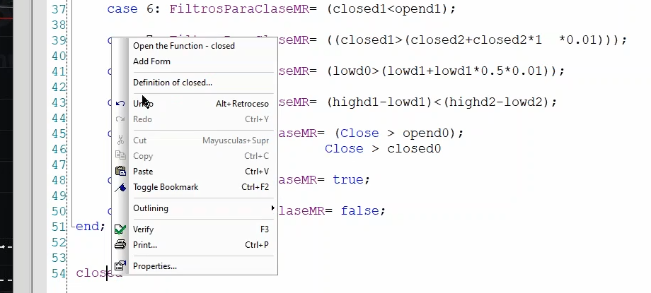
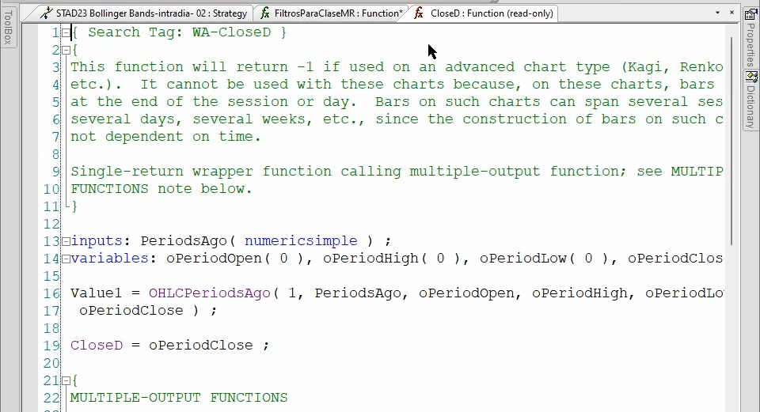
Es una función de estas que son un poco avanzadas podemos decir, pero bueno, se pueden abrir. Y la otra cosa que se puede hacer es pulsar encima F1 e ir a la ayuda de la misma función. Y esa es la mejor manera de entender bien lo que se está refiriendo. Esto es lo más importante.
Transición al sistema tendencial: Vez Ratio
Entonces, bueno, aquí también está trabajando un poquito en él y sí que había algún filtro que aportaba algo a los cortos:
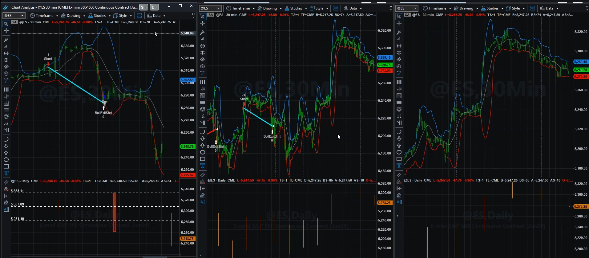
Chart 1:
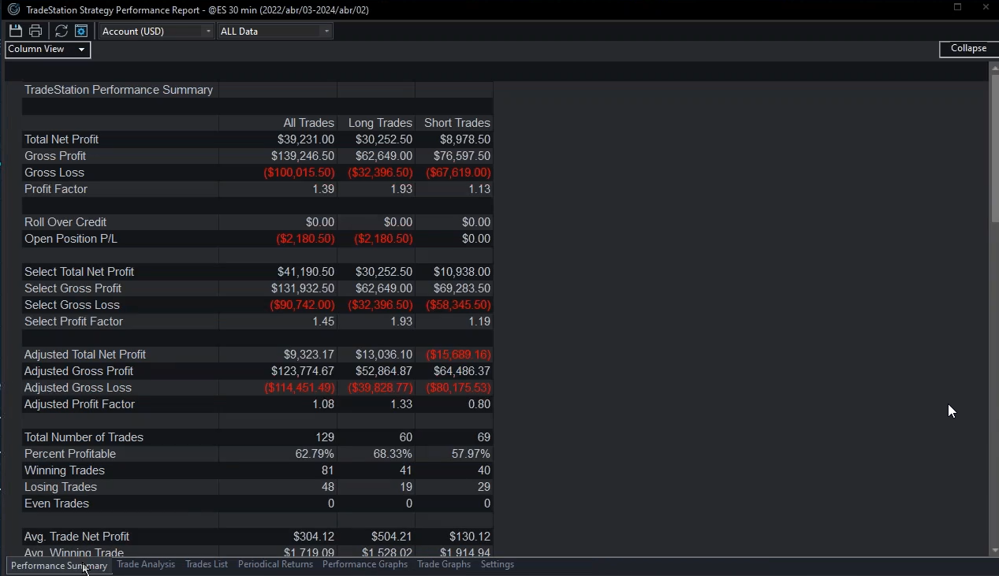
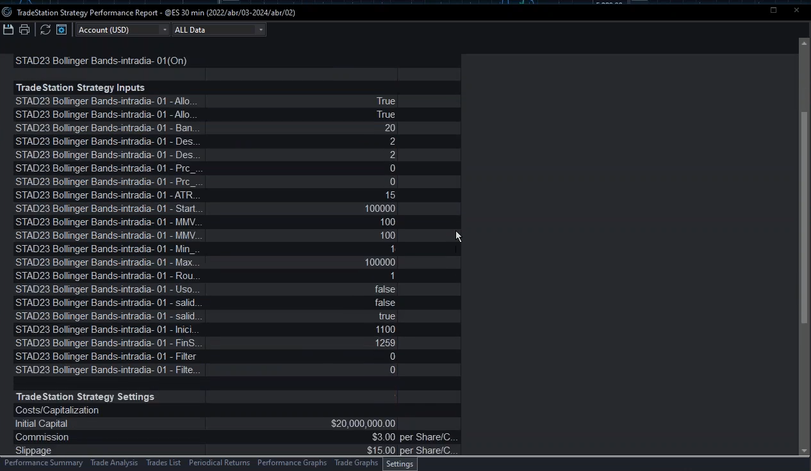
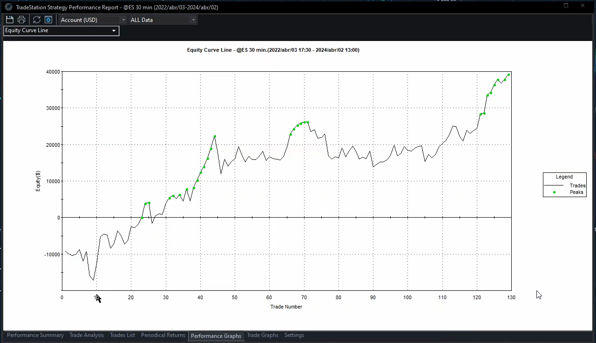
No está mal del todo, y tiene su valor, sin demasiadas complicaciones. Hay que buscarle, recomiendo buscar una ventana horaria, lo que os decía, y buscarle algún tipo de salida. A mí la salida en banda contraria, en ese tipo de estrategias, creo que va bien.
Y luego hay que buscar alguna salida para los fallos, que cuesta con esto, pero se puede buscar también. Y hay versiones que he visto pues buscando doble, salida otra vez en la banda. Es decir, por ejemplo, aquí:
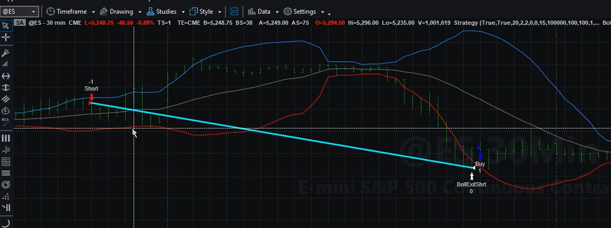
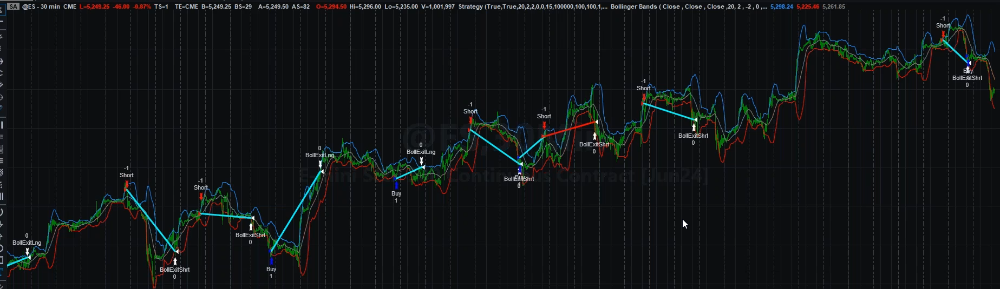
Cuando te vuelve a cerrar otra vez por la banda, sales. Cosas así. O también la salida temporal. Hay que buscar mejorar los fallos porque es verdad que tiene pocos en el sentido que es buena entrada, pero en general también da bastantes fallos. Y lo que os digo de las ventanas horarias suele funcionar también bastante bien.
wsp : Curso BB-TENDENCIAL(daily)
Introducción al sistema de ruptura por volatilidad
Hablamos también de probar la estrategia que podemos decir contraria; durante la teoría lo vimos. Aquí lo tengo todo en MultiCharts.
ABERRATION STRATEGY, os lo comenté, es un sistema que fue muy famoso durante muchos años. Pueden haber variaciones, pueden haber distintos conceptos del mismo tema.
Al final, el concepto básico es justo el contrario del que hemos visto ahora de Mean Reversion. Es decir, si antes lo que hacíamos era comprar cuando estábamos por debajo de la banda inferior, aquí lo que vamos a hacer es vender cuando rompemos la banda inferior y comprar cuando lo hacemos por la banda superior.
Características del sistema tendencial extremo
Es un sistema duro, es decir, muy tendencial; es el súper extremo, de los más tendenciales que hay, porque lleva al extremo aquello de que en tendenciales compras caro para vender más caro —o vendes barato para luego recomprar más barato—. En este caso es muy llevado al extremo, muy llevado al extremo. Y es porque normalmente, cuando compras o vendes, siempre tienes la sensación de que lo haces como tarde, de que lo haces como tarde.
En sí el código es sencillo, pero como todos, pues puede tener distintas variantes. Tampoco a este le hemos dado muchas vueltas, no le hemos dado muchas vueltas, pero yo os explico las vueltas que se le pueden dar, porque a partir de ahí pues podéis explorar y hacerlo.
Retrasar señales
Hay vueltas para la entrada, para retrasar la entrada. Por ejemplo: pedirle dos cierres en vez de un cierre; pedirle que sí, pues lo que os digo, que sean dos cierres por encima; pedirle alguna figura de velas determinada; que además del cierre por encima de la banda —para evitar algunas señales un poco tontas— pues que además cierre por encima del máximo del día anterior. Que casi siempre es así, pero puede haber algún caso que no; casi siempre se va a dar, pero vais a ver algún caso.
A ver si encuentro alguna hora en que haya caído así, tonto, y no lo espero. Primero, que tenga la misma banda puesta que en el gráfico; tengo la banda en 47, que entiendo que aquí le hemos dado un poquito al optimizador. Normalmente siempre va a ser así. Para pintar también las líneas más gruesas, porque si no creo que no las van a ver del todo bien.
Entradas tendenciales: comprar caro para vender más caro
A mí es una entrada que me gusta mucho, pero por ejemplo a Toño no le gusta nada. Es decir, esto… yo es que tengo una mentalidad tremendamente tendencial y me gusta. Pero es verdad que es un sistema muy duro, muy duro y muy difícil. Lo sabéis: puede pasar épocas muy largas con drawdowns fuertes, y solo es apto para activos muy tendenciales.
Entonces, a ver si encuentro alguna… No es habitual, ya os digo; normalmente cuando va a romper la banda va a haber cerrado. Pero puede haber algún caso, puede haber algún caso en que no.
Filtro adicional: stop de compra en el máximo
Mira, este caso de aquí se me da:
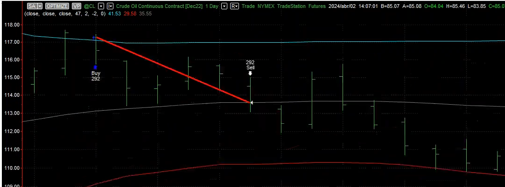
Entonces, una vez pasa eso, se puede poner un stop de compra en el máximo de esta vela, en vez de comprar a mercado:
Porque entonces le pides que siga el impulso, ¿entendéis? Es decir, en vez de pedirle comprar a mercado, le pongo un stop de compra aquí. Por ejemplo, aquí no hubiera entrado. ¿Por qué? Porque le estoy pidiendo que siga con impulso.
Porque es verdad que hay muchas veces que eso es lo que hace el antitendencial: que justo va a la banda y vuelve, como pasa aquí —no cierra, como pasa aquí—:
Entonces, para evitar esas entradas, se puede poner ese filtro añadido. Pero tiene un coste; hay activos en los que no acaba de ir bien, porque acaba entrando igual y entra más caro. Entonces, todo tiene un precio.
Normalmente, un activo en el que tú estés viendo que, optimizando, te pone una banda de 47, quiere decir que quiere frenarte un poco porque es muy volátil; necesita oscilar más sin que eso suponga entradas. Puede ser que te vaya bien algún filtro de este tipo: retrasar un poco la entrada para evitar algunas entradas en falso. Pero claro, el precio de ese tipo de sistemas es este: pillar estos trades tan magníficos:
Es decir, es lo que pasa luego cuando el activo pues se pega una hostia increíble, o pega tirones fuertes: pues se queda dentro y los captura.
La media central
La salida más convencional y más conservadora es en el mínimo. Aquí nuevamente tenemos implementada una versión que es un poco extraña, porque realmente hay dos: hay una que puede salir directamente con la media central, o pedirle un cierre por debajo.
If Allow_Long then begin
# Entra largo con un cierre por encima de la Banda Superior
If MarketPosition <> 1 and Close > UpBand then Buy next bar at market;Y hay versiones que usan doble, que es un poco esto: es decir, como un mecanismo de seguridad. Lo que pasa es que aquí está un poco al revés; eso es un poco extraño, no sé, la verdad no me acuerdo por qué lo pusimos así —igual estábamos haciendo pruebas o lo que sea—. Pero poner cierre de stop en la banda, que no deja de ser un stop de seguridad:
If Allow_Long then begin
# Entra largo con un cierre por encima de la Banda Superior
If MarketPosition <> 1 and Close > UpBand then Buy Contratos shares next bar at market;
If MarketPosition = 1 then begin
# Salida por stop en la banda central
Sell next bar at Ave Stop;
If Close < DnBand then Sell next bar at market;
End;
End;Prueba rápida: cerrar con cierre por debajo de la media
Vamos a hacer esa prueba rápida aquí ahora, a ver si en este caso nos mejora o nos empeora. Lo normal es que nos empeore, porque está optimizado; lo normal es que nos empeore.
Aquí la versión lo que hace es cerrar en stop en la media; cierra en stop en la media:
Lo que vamos a hacer es pedirle que cierre por debajo de la media, y le vamos a dejar de stop la banda contraria, por si hay un latigazo fuerte sin cerrar, que tenga esa seguridad de salirse, no quedarse ahí enganchado.
Es decir, vamos a invertir un poco el mecanismo. No es que invertir… es que ahora tiene los dos, pero no actúa el segundo, porque ahora lo que hace es cerrar en stop en la banda central.
Entonces, por ejemplo, aquí no saldría; saldría dos velas después:
Y probablemente peor. En este caso, ahora a veces —muchas veces— saldrá peor, otras saldrá mejor; hay que verlo. A mí me gusta un poco más así.
Simplemente estoy invirtiendo estas dos variables: Ave y
DnBand:
BuytoCover next bar at UpBand Stop;
If Close > Ave then BuytoCover next bar at market;Le he pedido que cuando cierre por encima de la media, entonces cierre a mercado en la siguiente:
If Allow_Long then begin
# Entra largo con un cierre por encima de la Banda Superior
If MarketPosition <> 1 and Close > UpBand then Buy Contratos shares next bar at market;
If MarketPosition = 1 then begin
# Salida por cierre bajo la media + stop de seguridad en banda inferior
Sell next bar at DnBand Stop;
If Close < Ave then Sell next bar at market;
End;
End;
If Allow_Short then begin
# Entra corto con un cierre por debajo de la Banda Inferior
If MarketPosition <> -1 and Close < DnBand then SellShort Contratos shares next bar at market;
If MarketPosition = -1 then begin
# Salida por cierre sobre la media + stop de seguridad en banda superior
BuytoCover next bar at UpBand Stop;
If Close > Ave then BuytoCover next bar at market;
End;
End;Bueno, lógicamente, como suponíamos, ha empeorado. Profit Factor y demás, en general empeora; sí, empeora a los dos lados. Pero era un ejemplo simple para que vierais la diferencia:
Aquí ahora le estamos pidiendo que cierre por encima para poder salir; hasta que no cierra por encima, no sale. Aquí antes lo había hecho; aquí ahora pues cierra un poquito después:
Y más. A mí me gusta un poco más así, pero no quiere decir que ahora no vaya mejor, porque repito: este tiene el canal optimizado, y es totalmente normal; con un canal optimizado lo normal es que vaya peor. Pero habría que ver si ahora, probando otro canal, pues va mejor o va peor; o sea, no necesita tener un canal de esa forma.
Simplemente son distintas opciones o distintas maneras del mismo concepto.
Sell next bar at
Ave Stop;If Close
< Ave then SellSalidas en tendenciales: no marear la perdiz
Vamos a ver filtros y salidas. En salidas, sí que no hay, en mi opinión, muchas cosas que hacer con un tendencial; no hay muchas cosas que hacer con un tendencial.
Mirad qué tenemos ahora mismo:
Lo estamos viendo ahora en MultiCharts. Aquí tenemos un porcentaje de aciertos, y ahora cuando lo encuentre os lo digo… cuando lo encuentre: 58 por ciento. Nunca me acuerdo; cambio de programa y nunca me acuerdo dónde saca la cosa, de verdad es un drama esto:
Aquí tenemos los datos que buscábamos. Aquí tenemos un 45,9% de
Percent Profitable; tampoco es muy bajo, pero es más bajo.
Y fijaos que tenemos un Avg Winning Trade de 2 millones y
un Avg Losing Trade de 625.000$: una situación realmente
muy superior el average winning, tanto en el largo como en el
corto —aunque esto habría que verlo en porcentaje, pero bueno, ya no se
ve aquí—.
Aquí podemos ver el análisis un poco mejor, este que veíamos antes en TradeStation, de los run-ups y demás. Es que aquí es 63 por ciento; por daros contexto, el petróleo llegó a ser negativo, por eso son magnitudes muy bestias: de un menos 8% y el average value 8 por ciento, con 2 por ciento:
Aquí tenemos que los positivos corren muchísimo más que antes. Es justo lo contrario que teníamos antes. Y de esta forma se invierte totalmente la tortilla con el caso anterior:
Y aquí, por lo tanto, es lo que os digo: hay que vigilar por no cortar. Es complicado; por eso es complicado gestionar las salidas de un tendencial, porque necesita dejar correr. Donde sí que se puede mejorar un tendencial es filtrando entradas, lógicamente filtrando entradas, aumentando las probabilidades; se puede filtrar entradas, y se debe filtrar entradas en muchos casos.
Pero en las salidas no os recomiendo marear mucho la perdiz. Al final hay que salir por un estilo trailing; esto no deja de ser un trailing, la media móvil:
Pero podéis buscar otra; tiene que ser una salida que le deje volver.
De hecho, a lo mejor esta es demasiado justa. Tiene que ser una salida que le deje volver; puede ser un trailing, puede ser la misma media por simplificación y no añadir grados de libertad. Pero no es conveniente, ya os digo, darle muchas vueltas, porque es necesario dejarle que desarrolle los trades para un tendencial; si no, ya no va a ser un tendencial.
Si quieres otra cosa, pues puedes perfectamente entonces convertirlo en un breakout, y entonces ya sí que tiene sentido TP, tiene sentido protegerlo, etcétera. Pero en un tendencial, en mi opinión, no hay que usar nunca objetivo, y hay que poner una salida tipo trailing que le permita al mercado volver y que nos garantice —con todas las comillas del mundo— de que la tendencia se ha acabado. Es lo que buscamos; nosotros lógicamente no lo vamos a conseguir en todas las ocasiones, pero en la mayoría de ocasiones hay que intentar conseguir eso.
¿Qué problema tienen estos sistemas? Que este mismo tipo de salida le va a hacer sufrir mucho cuando no hay una tendencia, y ahí está el problema del Avg Ratio.
¿Entonces qué más podemos hacer? Bueno, este tipo de sistemas se puede trabajar también interdiariamente, o se puede trabajar en la versión original de hace muchísimos años: el que la creó lo operaba en horizontes de diario, incluso se comenta que podían ser a semanal. Y lo hacía en una cesta de commodities bastante grande.
Portfolio de sistemas tendenciales
Es decir, al final este tipo de sistemas la única manera de trabajarlos es agrupándolos con otros. Hemos intentado evaluar o mirar un poco algo parecido; lo hemos hecho aquí en el Portfolio Trader.
Bueno, tenemos uno aquí con algunos activos seleccionados; esto no me acuerdo cómo estaba de gestión monetaria:
Y esto es un poco la manera de trabajar este tipo de estrategias, que tienen su buen momento pero tienen su mal momento:
Entonces, al final, en un portfolio un sistema tendencial puede tener su cabida, pero necesita —como ya hemos hablado siempre— tener otro tipo de sistemas en el portfolio que compensen en estos pésimos momentos que va a tener.
Movimientos explosivos en commodities
Es lo que os digo, son sistemas, y cuando hay tendencia, cuando pasan cosas ya veis que van pasando no, del petróleo, del oro, cosas de pronto increíbles, de subidas, de caídas, o el cacao ahora recientemente, pues ahí están. No sé si teníamos el cacao aquí metido… unos ganan, otros pierden; ahí está un poco la dificultad:
En fin, es lo bueno y malo de este tipo de estrategias: sufren lo que no está escrito en los laterales, porque de manera tiene un montón de señales falsas. Y lo que decía: hay que buscar la manera y buscar algún filtro para retrasar las entradas en algunos casos, porque cuando coja tendencia pues ya da igual que entre más caro. Pero si no, los laterales lo cosen.
Diferencia entre bolsa y commodities
Aun así, por eso os digo que la bolsa es muy complicada para ese tipo de sistemas, pero en commodities suele ir bien. Pero necesita filtros, necesita buscar filtros de tendencia que son de este tipo que habéis visto, o simplemente añadir algún otro filtro de tendencia como puede ser otra media o tipo ADX como habéis visto. Una ADX puede valer.
Y también hay versiones intradiarias como puede ser esta que vais a ver ahora:
Código: ABERRATION_INTRADIA_STRATEGY
Inputs: Allow_Long(True),
Allow_Short(True),
Length(35),
StdDevUp(2),
StdDevDn(2),
Prc_Stop(0), # Si StopLoss > 0 se utiliza el stop loss.
Prc_Profit(0), # Si Prc_Profit > 0 se utiliza el TP.
ATR_Per(15),
Start_Equity (100000),
MMVar_Start (100),
MMVar_Profits (100),
Min_Size (1),
Max_Size (100000),
RoundTo (1),
UsoATR(false), # Usamos Stops y Profits ajustados por inflación
# Elección de Horario
InicioSesion(0), # Inicio sesión de trading
FinSesion(2300), # Fin sesión de trading
FiltroLng(11), # Selector de filtros de 1 a 12. 11 siempre es verdadero. >12 siempre es falso
FiltroShrt(11); # Selector de filtros de 1 a 12. 11 siempre es verdadero. >12 siempre es falsoAquí el bueno de Alberto simplemente ha hecho una versión intradía, planteándolo como habíamos hecho anteriormente con unos filtros, ya está con horario y tal, poco, para que veáis el esquema básico, sin más.
Este es un poco el esquema: en intradía siempre va un poco así, siempre va un poco así. Filtros horarios, filtros de largos y/o de cortos, que pueden ser el mismo o no. Es decir, en ambos casos —en tiempo y en filtro— puede ser o no puede ser; las dos cosas hay que considerarlas.
¿Aquí tiene mucho sentido filtrado separado? Aquí empieza a tener menos, es lo que os decía. Podemos evaluarlo, podemos hacer una evaluación preliminar, mirarlo. Pero aquí empieza a gustarme menos.
En bolsa es muy claro; a la que ya vamos a commodities es más duro. Y puede ser que utilicemos el mismo filtro, con lo cual ya el mismo filtro quiere decir que, lógicamente, si es de tendencia pues será alcista por encima —imaginaos una media— y bajista por debajo, porque no usaremos uno distinto para largos que para cortos.
Si es de volatilidad pues lo mismo: si hay volatilidad para operar bien. O sea, puedo negar el filtro, pero las reglas son las mismas. Puede ser que lo lógico es que sea la contraria. En algunos casos no; en algunos tipos de filtro de volatilidad o expansión, es la misma regla para largo que para corto. Pero lógicamente, si es por encima de una media, no será igual, será lo contrario —pero no es otra media o tal—.
Y lo mismo para el tema de filtros horarios; es lo mismo para el tema de filtros.
No quiere decir que sea obligatorio usarlo, es decir, que es una opción que en intradía tiene mucho sentido evaluar, y que normalmente en intradía la evaluamos. Normalmente luego puede descartarse, dice “oye pues no, voy toda la sesión”, perfecto. Pero tiene sentido evaluarlo, ¿se entiende?
Código intradía: mismo esquema con filtros
Código: ABERRATION_INTRADIA_STRATEGY
Bueno, pues lo que os digo: el código es este como ya habéis visto. Mismo historia, que es un monetario igual. Simplemente añadimos la regla de los filtros:
...
If Allow_Long then
begin
If MarketPosition <> 1 and Close > UpBand and FiltrosParaClaseMR(FiltroLng) then
Buy Contratos shares next bar at market;
...Que no sé si Alberto ha hecho los mismos o no. Ha hecho los mismos. Y ya está, sin más.
Miremos el filtro por dentro FiltrosParaClaseMR:
# Lo aplicamos en Data2 para los cálculos de los filtros
...
opend0 = Open of data2; highd0 = High of data2; lowd0 = Low of data2; closed0 = Close of data2;
opend1 = Open[1] of data2; highd1 = High[1] of data2; lowd1 = Low[1] of data2; closed1 = Close[1] of data2;
opend2 = Open[2] of data2; highd2 = High[2] of data2; lowd2 = Low[2] of data2; closed2 = Close[2] of data2;
opend3 = Open[3] of data2; highd3 = High[3] of data2; lowd3 = Low[3] of data2; closed3 = Close[3] of data2;
opend4 = Open[4] of data2; highd4 = High[4] of data2; lowd4 = Low[4] of data2; closed4 = Close[4] of data2;
opend5 = Open[5] of data2; highd5 = High[5] of data2; lowd5 = Low[5] of data2; closed5 = Close[5] of data2;
body1d = absvalue(opend1-closed1);
range1d = (highd1-lowd1);
body5d = absvalue(opend5-closed1);
range5d = maxlist(highd1, highd2, highd3, highd4, highd5) - minlist(lowd1, lowd2, lowd3, lowd4, lowd5);
Switch(selector) Begin
case 1: FiltrosParaClaseMR = body5d < 0.75 * range5d;
case 2: FiltrosParaClaseMR = body5d > 0.9 * range5d;
case 3: FiltrosParaClaseMR = ((highd0 > (lowd0 + lowd0 * 0.5 * 0.01)));
case 4: FiltrosParaClaseMR = ((highd0 > (lowd0 + lowd0 * 1.5 * 0.01)));
case 5: FiltrosParaClaseMR = ((highd0 < (lowd0 + lowd0 * 2.5 * 0.01)));
case 6: FiltrosParaClaseMR = (closed1 < opend1);
case 7: FiltrosParaClaseMR = ((closed1 > (closed2 + closed2 * 1 * 0.01)));
case 8: FiltrosParaClaseMR = (lowd0 > (lowd1 + lowd1 * 0.5 * 0.01));
case 9: FiltrosParaClaseMR = (highd1 - lowd1) < (highd2 - lowd2);
case 10: FiltrosParaClaseMR = (C > opend0);
case 11: FiltrosParaClaseMR = true;
case >11: FiltrosParaClaseMR = false;
end;Para la clase siguiente evaluaremos un poquito. Era la idea, claro, la idea es verla. Era la idea, que no tiempo de trabajar lo más. Bueno, esta semana de más y un poquito más complicada por los días festivos, que ya el viernes viene también a trabajar y ayer también, pero lógicamente pues las mismas horas. Y encima mañana también tenemos un poquito más complicado.
Plan para la siguiente sesión: salidas y filtros
Entonces, aquí sí que queríamos mirar unos filtros específicos y no nos llegaba. Pero como os decía, trabajaremos todo esto, los selectores, la semana que viene, sobre todo para las salidas. Pero intentaremos al menos, estos de Bollinger, pues darles una capita de pintura para acabar de dejarlos más limpios y más aprovechables.
Entonces, seguramente en estos dos al menos también veremos los filtros. Para la semana que viene trabajaremos más los que espero. El concepto, repito, es el mismo: trabajar filtros, que sí que pueden ser unos más para tendenciales que para Mean Reversion, es verdad. Pero en algunos casos son similares, y se basan sobre todo en pautas de precios.
Pero sí que hay algunos que son más de tendencia y otros que son más de no tendencia; eso es así. Porque al final, bueno, la tendencia no deja de ser una expansión, y la anti-tendencia normalmente es una contracción. Entonces eso ya te marca una situación inversa. A veces es el mismo filtro pero al revés. Ya os expliqué aquello de que las expansiones a veces son contraintuitivas, porque lo que anticipa una expansión es una contracción, y lo que anticipa una contracción es una expansión.
Entonces, las mejores entradas de los anti-tendenciales se dan post-expansión, y al revés, ¿no? Hoy está el cacao, no, donde tenía la expansión después de un tiempo de contracción. Entonces hay veces que es el mismo filtro pero invertido; entonces esto suele darse.
Compromiso: lista de filtros útiles antes de fin de curso
Pero bueno, sí que algunos, aunque ya hemos visto bastantes, pero sí que antes de final de curso trataremos de crearos un poco una lista un poco más útil de algunos filtros especialmente útiles.
Y esto me comprometo a daros lo antes de acabar, antes de que probablemente la última clase —donde hagamos el repaso y recopilación de todo y reuniremos ya lo mejor de lo que tengamos— pues seguramente la última clase creo que es el día de darlo esto ya, dar las perlas, ¿no Alberto? Las perlas hay que darlas el último día; el último día me las guardo para el último día, las perlas.
Avance de la siguiente clase: salidas
Entonces, la semana que viene lo acabamos. Tenemos pensado hacer el tema de trabajar salidas con las estrategias que ya hemos hecho hasta ahora. Las traemos hechas, explicaremos realmente las salidas, pero luego ya las aplicaremos. Traemos algunas aplicadas, y tenemos que aplicar algunos indicadores también para que veáis cómo se hace.
Y veremos también, si nos da tiempo —que creo que sí— intentaremos aplicar filtros a este y a los dos de Bollinger, para justo con las salidas y los filtros dejar estos dos ya redondos para que podáis darle algún tipo de uso.
Sistemas cerrados vs todo-terreno
Hay que tener claro que son sistemas sencillos, aplicables bastantes, bastante cerrados de mercado. Es decir, no son todo-terreno. Hay sistemas todo-terreno y hay sistemas poco más cerrados; estos son sistemas cerrados, es decir, muy específicos de activos que tienen una —valga el juego de palabras— tendencia a ser tendenciales o tendencia a no serlo.
Entonces, pero bueno, ese tipo de sistemas también son útiles y también van bien en esos activos. Ya digo, las materias primas generalmente suelen ir bastante bien, pero hay que mejorarlo. Como está es demasiado duro. Hay que mejorarle un poco las entradas al tendencial sobre todo.